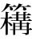

太史公曰：自古圣王将建国受命，兴动事业，何尝不宝【宝；重视。】卜筮以助善！唐虞以上，不可记已。自三代之兴，各据祯祥【祯祥：吉兆。】。涂山之兆从【从：吉利。】而夏启世，飞燕之卜顺故殷兴，百谷之筮吉故周王。王者决定诸疑，参以卜筮，断以蓍龟，不易之道也。
蛮夷氐羌虽无君臣之序，亦有决疑之卜。或以金石，或以草木，国不同俗。然皆可以战伐攻击，推兵【推兵：进军。】求胜，各信其神，以知来事。
太史公说：从古至今，圣明的君主即将创建国家，领受天命，兴办大业，何尝不重视占卜来协助促成善举的！唐尧和虞舜之前的事，已经无法记载。自从夏、商、周这三代的逐次兴起，各自依照占卜的吉兆作为凭据。涂山氏的卜兆吉利，因此夏打开了自己的时代；飞燕的卜兆吉顺，因此殷族得以兴国；百谷的筮兆吉祥，所以周室才得以称王天下。君王在决定各种疑难的时候，就加以卜筮，用蓍草、龟甲判断吉凶，这是不曾更改的方法。
尽管蛮、夷、氐、羌各族没有君臣上下的等级之分，但是也有决断疑惑的占卜。他们有的是以金石占卜，有的是以草木占卜，各国都有不同的风俗。但是像能否征伐攻击，能否出兵取胜，他们都相信自己所推崇的神灵，以此来预知将来的事。
略闻夏殷欲卜者，乃取蓍龟，已则弃去之，以为龟藏则不灵，蓍久则不神。至周室之卜官，常宝藏蓍龟；又其大小先后，各有所尚，要【要：关键，关窍。】其归【归：目的。】等耳。或以为圣王遭事无不定，决疑无不见，其设稽【稽：磕头。】神求问之道者，以为后世衰微，愚不师智，人各自安，化分为百室，道散而无垠，故推归之至微【至微：微妙的事理。】，要絜于精神也。或以为昆虫之所长，圣人不能与争。其处【处：判断。】吉凶，别然否，多中【中：准确。】于人。至高祖时，因【因：沿袭。】秦太卜官。天下始定，兵革未息。及孝惠享国日少，吕后女主，孝文、孝景因袭掌故，未遑【未遑：来不及。遑，闲暇。】讲试，虽父子畴官，世世相传，其精微深妙，多所遗失。至今上即位，博开艺能之路，悉延百端之学，通一伎之士咸得自效，绝伦超奇者为右，无所阿私，数年之间，太卜大集。会上欲击匈奴，西攘大宛，南收百越，卜筮至预见表象，先图其利。及勐将推锋执节【执节：控制。】，获胜于彼，而蓍龟时日亦有力于此。上尤加意，赏赐至或数千万。如丘子明之属，富溢贵宠，倾于朝廷。至以卜筮射【射：揣度。】蛊道，巫时或颇【颇：有些。】中。素有眦睚【眦睚：细小的愤怒。】不快，因公行诛，恣意所伤，以破族灭门者，不可胜数。百僚荡恐【荡恐：恐惧不安。】，皆曰龟策能言。后事觉奸穷，亦诛三族。
我粗略听说过夏、殷时期打算占卜的人，便找来蓍草龟甲，占卜结束之后就丢掉它们，认为龟甲一旦收藏起来就不灵了，蓍草用得久了就不神了。等到周王室的卜官占卜后，经常将蓍草和龟甲珍藏起来备用，还有选用蓍草和龟甲的大小及先后，各自有推崇的方法，但是他们的目的却是一样的。有的人认为圣王遇到事情没有无法确定的，定断疑难没有不是明白可见的，他们设置这套求神问卜方法的原因，是担忧后代日渐衰败式微，愚蠢而不愿向聪明的人学习，人人都满足于自身的见识，教化分化出为百家，道理散乱而漫无边际，因此将事理推演归结到最为精细的地方，总括规范到精神上。还有的人认为灵龟这种动物的生长，圣人也不能与它们相比。它们判断吉凶，分辨可否，常常比人还要准确。等到了汉高祖时，沿袭秦朝制度设置了太卜官。天下刚刚统一，战争还未平息。等到了孝惠帝继位，在位的时间很短，吕后是个女君主，孝文帝、孝景帝沿袭旧的制度，没有闲暇探究卜筮的事情。虽然有的父子都担任畴官，世代传承，但是这其中的精微幽深之处，大多已经遗失。等到当今皇上继承帝位，广开艺能的门路，悉迎诸子百家的学说，通晓一门技能的人都可以发挥出自己的长处，技艺绝妙、超群出奇的人更是位列高位，没有任何偏私。几年之内，太卜人才聚集了很多。正赶上皇上打算讨伐匈奴，向西抵御大宛，向南收服百越，卜筮者很精确地预示了各种情况，事先谋划制定好对策。等到勐将在前冲锋，执节指挥战斗，在各个地区都取得大胜，而以蓍草和龟甲卜筮所推算出来的得胜时日对此也大有帮助。于是皇上十分满意，赏赐给卜筮者有的多达几千万钱。像丘子明这些人，富到了极点，尊贵而备受宠幸，其富贵荣宠超过了满朝的公卿大臣。至于利用卜筮来占卜邪术和巫术等行为，有时预测结果也颇为准确。平日里和卜官有些小恩怨的人，都被他们借着公事除掉。卜官随意中伤他人，因此而被破族灭家的人，数不胜数。百官都恐惧不安，都奉承说龟甲、蓍草能够说话。等到后来卜官诛害人的事情被发现，奸计难以奏效，他们也同样被诛灭了三族。
夫摓策定数【定数：吉凶。】，灼龟观兆【观兆：观察龟甲灼烧后呈现出的裂痕。】，变化无穷，是以择贤而用占焉，可谓圣人重事【重事：慎重从事。】者乎！周公卜三龟，而武王有瘳【瘳：病愈。】。纣为暴虐，而元龟【元龟：大龟。】不占。晋文将定襄王之位，卜得黄帝之兆，卒受彤弓【彤弓：朱红色的弓。】之命。献公贪骊姬之色，卜而兆有口象【口象：口舌祸象。】，其祸竟流五世。楚灵将背周室，卜而龟逆【龟逆：龟甲的兆象不吉利。】，终被干谿之败。兆应信诚于内，而时人明察见之于外，可不谓两合者哉！君子谓夫轻卜筮，无神明者，悖【悖：迷惑。】；背人道，信祯祥【祯祥：吉祥，指占卜。】者，鬼神不得其正。故《书》建稽疑，五谋而卜筮居其二，五占从其多，明有而不专之道也。
余至江南，观其行事，问其长老，云龟千岁乃游莲叶之上，蓍百茎共一根。又其所生，兽无虎狼，草无毒螫。江傍家人常畜龟饮食之，以为能导引致气，有益于助衰养老，岂不信哉！
龟筮协从图，选自《钦定书经图说》。
捧着蓍草来判断吉凶，灼烧龟甲来察视征兆，变化无穷，因此选择贤德的人来担任卜官，可以说是圣人也非常慎重的事情吧！周公用龟甲占卜了三次，周武王因此而病愈。商纣王以暴虐治国，用大龟占卜也得不到吉兆。晋文公即将恢复周襄王的王位，占卜得到了黄帝之兆，最终接受了朱红色的弓而成为诸侯。晋献公贪图骊姬的美色，占卜得到有口舌之祸的凶象，其灾祸竟然流传了五代。楚灵王想要背叛周天子，占卜时获得不祥之兆，最终在干谿惨败。这样看来，征兆和应验对内诚实地预示，而当时的人能够明察事理，看到外在的结果，怎么能说这不是相互吻合的呢！君子认为那些轻视卜筮，不信任神明的人都非常荒谬；放弃人谋而迷信祥瑞的人，鬼神也难以被公正的看待。所以《尚书》九畤稽疑第七记载，所举五谋要卜和筮其中两种，五谋不一致时，要顺从占多数的意见，这表明虽有卜筮，但并非专信卜筮。
我来到长江以南地区，观察当地百姓的行事，问询当地的长老，他们说龟要活到一千岁才能在莲叶上游戏，蓍草即使有百条枝茎也只有一条根。在龟和蓍草生长的地方，野兽里面没有虎狼，草丛里没有毒虫。住在长江边的人，经常畜养龟这种动物，用食物喂养它们，认为它能为人疏通筋络，增加元气，有助于人们防衰养老，这话难道不可信吗！
褚先生曰：臣以通经术，受业博士，治《春秋》，以高第为郎，幸得宿卫，出入宫殿中十有年。窃好《太史公传》。《太史公之传》曰：“三王不同龟，四夷各异卜，然各以决吉凶，略窥其要，故作《龟策列传》。”臣往来长安中，求《龟策列传》不能得，故之大卜官【大卜官：太卜官。】，问掌故文学【文学：官名，主管学校、教导学生之事。】长老习事者，写取【写取：抄录。】龟策卜事，编于下方。
褚先生说：我由于通晓经术，跟随博士求学，研习《春秋》，因为成绩优秀而出任郎官，幸运地担任宫廷值宿警卫，出入宫殿已经有十多年了。我很喜欢《太史公传》。《太史公传》中说：“夏、商、周这三代君主用龟占卜的方法各不相同，四方蛮夷所用的占卜习惯也不相同，但是分别都用占卜来判断吉凶。我大概明白其中的关键，因此撰写了《龟策列传》。”我在长安城往来行走，找寻《龟策列传》却没能得到，所以我到太卜官那里去，询问谙熟龟策占卜之事的文学长老们相关的掌故，记录下了解到的龟策占卜的事情，编到了下面。
闻古五帝、三王发动举事，必先决蓍龟。传曰：“下有伏灵【伏灵：即“茯苓”，中药名。】，上有兔丝【兔丝：即“菟丝”，一种植物，种子可以入药。】；上有捣蓍【捣蓍：丛生的蓍草。】，下有神龟。”所谓伏灵者，在兔丝之下，状似飞鸟之形。新雨已，天清静无风，以夜捎兔丝去之，即以【：通“篝”，用竹笼罩火，灯笼。】烛此地，烛之火灭，即记其处，以新布四丈环置之，明即掘取之，入四尺至七尺，得矣，过七尺不可得。伏灵者，千岁松根也，食之不死。闻蓍生满百茎者，其下必有神龟守之，其上常有青云覆之。传曰：“天下和平，王道得【得：得以实现。】，而蓍茎长丈，其丛生满百茎。”方今世取蓍者，不能中古法度，不能得满百茎长丈者，取八十茎已上，蓍长八尺，即难得也。人民好用卦者，取满六十茎已上，长满六尺者，既可用矣。记曰：“能得名龟者，财物归之，家必大富至千万。”一曰“北斗龟”，二曰“南辰龟”，三曰“五星龟”，四曰“八风龟”，五曰“二十八宿龟”，六曰“日月龟”，七曰“九州龟”，八曰“玉龟”：凡八名龟。龟图各有文在腹下，文云云者，此某之龟也。略记其大指，不写其图。取此龟不必满尺二寸，民人得长七八寸，可宝矣。今夫珠玉宝器，虽有所深藏，必见其光，必出其神明，其此之谓乎！故玉处于山而木润，渊生珠而岸不枯者，润泽之所加也。明月之珠出于江海，藏于蚌中，龙【龙：蛟龙。，通“蛟”。】伏之。王者得之，长有天下，四夷宾服。能得百茎蓍，并得其下龟以卜者，百言百当【当：应验。】，足以决吉凶。
听说古时的五帝、三王发动兴举的大事之时，一定要提前以蓍草龟甲占卜来做决断。古书上说：“下面有伏苓，上方有菟丝；上面有捣蓍，下方有神龟。”所说的伏苓，在菟丝的下面，形状如同飞鸟。刚下过雨之后，天气晴朗，没有一丝风，趁着夜晚将菟丝割掉，然后用灯笼照着这个地方，火熄灭之后，马上记下这个位置，用四丈新布将这个地方围起来，等到天亮再把它挖出来，挖到四尺至七尺深就能得到它了，要是超过七尺就无法得到了。伏苓，原本是千年古松的根，吃了它的人能够长生不死。听说蓍草长满一百条枝茎的话，它的下面就一定有神龟在守护，它的上方常常有青云笼罩。古书中说：“天下安定和平，王道得以推行，蓍草的茎就能够长到一丈长，丛生的一根能够它长出一百根茎来。”而当今世间用着草占卜的人，不能与古代的法度相合，不能获得长满百茎、长达一丈的蓍草，能够得到八十茎以上、长达八尺的蓍草已经十分不易了。百姓中有喜好卜筮的人，得到六十茎以上、长达六尺的蓍草，就能够使用了。古书中说：“能获得名龟的人，财物都会归他所有，家中一定会大富大贵，得到千万钱。”第一名称作“北斗龟”，第二称作“南辰龟”，第三称作“五星龟”，第四称作“八风龟”，第五称作“二十八宿龟”，第六称作“日月龟”，第七称作“九州龟”，第八称作“玉龟”：一共有这八种名龟。古书里的龟图都会有文字标在龟腹的下方，写明这是谁的龟。我大致记录了它们的要旨，并未摹画那些图。得到这些名龟不用非得身长一尺二寸，百姓能够得到身长达七八寸的，就可以将它当作宝贝了。现在的这些珠玉宝器，纵使进行深藏，也一定能看到它们的光彩，一定能显示它们的神明，说的应该就是这种情况吧！所以山上有美玉，树木就会润泽；深渊生长着珍珠，岸上的草木就不枯萎，那是受到珠玉滋润的缘故。明月般美丽的珍珠出产在江海，藏身在蛤蚌里，蚊龙趴在上面，君主获得了它，就可以长久地拥有天下，四方各族都来臣服。倘若能够获得长有百茎的蓍草，并且获得蓍草之下的神龟，以此来进行卜筮的，一定会百言百中，能够以此来判断吉凶。
神龟出于江水中，庐江郡常岁时生龟长尺二寸者二十枚输【输：送。】太卜官，太卜官因以吉日剔取其腹下甲。龟千岁乃满尺二寸。王者发军行将，必钻龟庙堂之上，以决吉凶。今高庙【高庙：汉高祖的庙。】中有龟室，藏内【内：通“纳”，收藏。】以为神宝。
《传》曰：“取前足臑骨【臑骨：前肢的下半截骨头。】穿佩之，取龟置室西北隅悬之，以入深山大林中，不惑。”臣为郎时，见《万毕硃方》，传曰：“有神龟在江南嘉林中。嘉林者，兽无虎狼，鸟无鸱枭，草无毒螫，野火不及，斧斤不至，是为嘉林。龟在其中，常巢于芳莲之上。左胁书文曰：‘甲子【甲子：甲子年。】重光，得我者匹夫为人君，有土正【正：官长。】，诸侯得我为帝王。’求之于白蛇蟠杅【蟠杅：盘曲。】林中者，斋戒以待，譺然【譺然：恭敬诚恳。】，状如有人来告之，因以醮酒【醮酒：用酒泼地。】佗发【佗发：披头散发。】，求之三宿而得。”由是观之，岂不伟哉！故龟可不敬与？
南方老人用龟支床足，行【行：经过。】二十余岁，老人死，移床，龟尚生不死。龟能行气导引。问者曰：“龟至神若此，然太卜官得生龟，何为辄杀取其甲乎？”近世江上人有得名龟，畜置之，家因大富。与人议，欲遣去。人教杀之勿遣，遣之破人家。龟见梦曰：“送我水中，无杀吾也。”其家终杀之。杀之后，身死，家不利。人民与君王者异道。人民得名龟，其状类不宜杀也。以往古故事言之，古明王圣主皆杀而用之。
神龟出产于长江水中，庐江郡每年按照时节将二十只身长达一尺二寸的活龟敬献给太卜官，太卜官会选择吉日剔取龟的腹甲。龟活到千岁时才拥有满一尺二寸的甲。君王每逢调兵遣将，发动战事，一定会在庙堂上钻龟甲占卜，以判定吉凶。如今高祖庙里建有一间龟室，藏着这种龟甲并将其当成神宝。
古书中说：“选取龟的前足骨，穿起来佩戴在身上，将龟悬挂在房间的西北角，这样就算走进深山老林里，也不会迷路。”我担任郎官时，读过《万毕方》中的石朱方，上面说：“有一种神龟在江南的嘉林中生活。嘉林，就是野兽中没有虎狼，鸟群中没有猫头鹰，草丛中没有毒草恶虫，野火烧不到，斧头砍不到的树林。龟处身嘉林中，经常在芳莲的上面筑巢。龟的左胁下写的文字说：‘甲子年的日冕重光之时，获得我的人，普通人也能成为获得封地的官长；诸侯如果能得到我就可以做帝王。’来到白蛇盘曲的林中寻找神龟的人，斋戒之后等在这里，十分恭敬，那情形就如同有人来告知他神龟的消息一般，于是将酒洒到地上，披头散发，乞求三天三夜才能得到神龟。”由此来说，这迎取神鬼的仪式多么宏伟壮观！所以我们难道可以不尊敬龟吗？
南方的一位老人用龟支撑床腿，过去二十几年，老人去世，将床移开，龟仍然活着没有死去。龟自身能够行气呼吸。有人询问说：“龟能够神通到这种程度，那太卜官获得了活着的龟，为什么还要杀了它，取下它的甲呢？”不久前长江边有个人获得了一只名龟，把它养起来，家中因此而发了大财。他与别人商量，打算把龟放生。有人让他将龟杀死，别放生，如果将龟放走的话就会家破人亡。龟给他托梦说：“将我送我水里，不要杀我。”那户人家最终还是将龟杀掉了。杀了龟之后，这个人就死了，家中也不复往日的吉祥富贵。百姓与君主处事的道理并不相同。百姓获得名龟，看情况似乎不应该杀死它。而按照古代的惯例来看，古时的明君圣主都是杀死名龟然后利用龟甲占卜。
宋元王【宋元王：指宋元公。】时得龟，亦杀而用之。谨连其事于左方，令好事者观择其中焉。
宋元王二年，江使神龟使于河，至于泉阳，渔者豫且举网得而囚之。置之笼中。夜半，龟来见梦于宋元王曰：“我为江使于河，而幕网当吾路。泉阳豫且得我，我不能去。身在患中，莫可告语。王有德义，故来告诉。”元王惕然而悟。乃召博士卫平而问之曰：“今寡人梦见一丈夫【丈夫：成年男子。】，延颈而长头，衣玄绣之衣【玄绣之衣：黑色且绣花的衣服。】而乘辎车，来见梦于寡人曰：‘我为江使于河，而幕网当吾路。泉阳豫且得我，我不能去。身在患中，莫可告语。王有德义，故来告诉。’是何物也？”卫平乃援式【援式：拿起星盘。式，即“栻”。】而起，仰天而视月之光，观斗【斗：北斗星的斗柄。】所指，定日处乡。规矩为辅，副以权衡。四维【四维：东南、东北、西南、西北。】已定，八卦相望。视其吉凶，介虫【介虫：指龟。】先见。乃对元王曰：“今昔壬子，宿在牵牛。河水大会，鬼神相谋。汉正南北，江河固期，南风新至，江使先来。白云壅汉，万物尽留。斗柄指日，使者当囚。玄服而乘辎车，其名为龟。王急使人问而求之。”王曰：“善。”
于是王乃使人驰而往问泉阳令曰：“渔者几何家？名谁为豫且？豫且得龟，见梦于王，王故使我求之。”泉阳令乃使吏案籍视图，水上渔者五十五家，上流之庐，名为豫且。泉阳令曰：“诺。”乃与使者驰而问豫且曰：“今昔汝渔何得？”豫且曰：“夜半时举网得龟。”使者曰：“今龟安在？”曰：“在笼中。”使者曰：“王知子得龟，故使我求之。”豫且曰：“诺。”即系龟而出之笼中，献使者。
宋元王时获得了一只龟，也将龟杀掉后再利用它。我谨将这件事接着记录到下面，供有兴趣的人阅读参考。
宋元王二年（前530年），长江之神派神龟出使黄河，到达泉阳时，渔夫豫且撒下网捕捉到了神龟，并将它囚禁在笼子里面。等到半夜，神龟给宋元王托梦说：“我替长江之神出使黄河，但是被鱼网阻拦了去路。泉阳人豫且捉住了我，我没有办法离开。陷于灾难之中，无处求救。君王是有德义之人，所以我来向您求救。”元王很快就醒了过来，于是召来博士卫平，向他询问道：“今晚我做梦梦到一名男子，伸长脖子，头长长的，身穿带有刺绣的黑色衣服，乘坐辎车，来给我托梦说：‘我替长江之神出使黄河，却被鱼网阻挡了去路。泉阳人豫且捉住了我，我无法离开。身陷患难之中，无处求救。君王是有德义之人，因此我来向您求救。’这是什么东西呢？”于是卫平便取出占卜用具站了起来，抬头看天，仰视月光，观测北斗星的斗柄所指的方向，估算太阳在天空里所处的位置。以圆规和矩尺当作辅佐，还用上了秤锤和秤杆。已然确定了东南、东北、西南、西北这四个方位，干、坤、震、巽、坎、离、良、兑八卦也都各在其位，彼此相望。观测其所呈现出来的吉凶，甲介之虫最先显现出来。于是卫平就对元王说：“昨晚是壬子日，星宿为牵牛。这是黄河大水相会，鬼神相谋之时。银河处于南北方向，长江之神和黄河之神本来相约，南风刚来的时候，长江之神的使者先来拜谒黄河之神。此时白云壅塞住了天河，万物都被滞留不前。北斗星的斗柄指向太阳，江神的使者应该是被囚禁了。您梦见的身穿黑衣且乘坐辎车的，它的名字就是龟。君王尽快派人去打问并找到它。”元王说：“好。”
于是元王就派人乘车飞驰前往泉阳，询问泉阳县令说：“县里有多少户渔民？谁叫豫且这个名字？豫且捕获一只龟，这只龟给君主托梦，因此君主派我前来寻找它。”泉阳令于是命县吏查阅户籍簿和地图，发现沿水的渔民有五十五家，上游有一间小屋，主人的名字叫豫且。泉阳令说：“很好。”就与使者一同飞驰前去询问豫且说：“昨晚你捕鱼获得了什么？”豫且说：“半夜的时候撒下网捉到了一只龟。”使者问：“如今龟在哪？”豫且说：“在笼子中。”使者说：“君王知道你获得了这只龟，因此派我前来求取它。”豫且说：“可以。”随即将龟拴起来，从笼里取出，交给了使者。
使者载行，出于泉阳之门。正昼无见，风雨晦冥【晦冥：光线昏暗。】。云盖其上，五采青黄；雷雨并起，风将【将：吹。】而行。入于端门【端门：宫殿南面的正门。】，见于东箱【东箱：东厢房。】。身如流水，润泽有光。望见元王，延颈而前，三步而止，缩颈而却，复其故处。元王见而怪之，问卫平曰：“龟见寡人，延颈而前，以何望也？缩颈而复，是何当也？”卫平对曰：“龟在患中，而终昔囚，王有德义，使人活之。今延颈而前，以当谢也，缩颈而却，欲亟去也。”元王曰：“善哉！神至如此乎，不可久留；趣驾送龟，勿令失期。”
卫平对曰：“龟者是天下之宝也，先得此龟者为天子，且十言十当，十战十胜。生于深渊，长于黄土。知天之道，明于上古。游三千岁，不出其域。安平静正，动不用力。寿蔽天地，莫知其极。与物变化，四时变色。居而自匿，伏而不食。春仓【仓：通“苍”，青色。】夏黄，秋白冬黑。明于阴阳，审【审：明白。】于刑德。先知利害，察于祸福，以言而当，以战而胜，王能宝之，诸侯尽服。王勿遣也，以安社稷。”
使者载着龟离开，从泉阳城门出来。正值白天天色却突然暗了下来，紧接着风雨齐至，天昏地暗。云彩覆盖其上，五彩斑斓；雷雨交加，大风呼啸随之前行。车子行进到王宫的端门，元王在东偏殿见到这只龟。龟身如同流水一般，润泽而有光彩。龟看到元王，抻长脖子向前爬，爬三步就停了下来，又将脖子缩了回去向后退，回到它之前所在的位置。元王看到这种情况觉得十分奇怪，询问卫平说：“龟看到我，把脖子伸长向前爬行，它在看什么？又缩回脖子退回原地，这又表示什么呢？”卫平回答说：“龟陷于患难之中，且被囚禁了一整夜，君王是有德义的人，派人将它救下来。如今它把脖子伸长向前爬行，表示对您的感谢，又缩回脖子向后退去，是希望快些离去。”元王说：“好！龟的神灵居然到了这样的地步，不能久留它，尽快驾上车把神龟送走，不要让它耽搁了期限。”
卫平回答说：“龟是天下的宝物，率先获得这只龟的人就能够成为天子，而且所言无不应验，所战无不胜利。龟在深渊出生，在黄土生长。通晓上天的大道，明了上古之事。在世间游历三千年，也不离开它所居住的区域。龟静气平和，中正端庄，行动自如，不用蛮力。寿命与天地相齐，没人知道它寿命的极限是多少。它与万物一同变化，跟随四季而改变颜色。闲来无事的时候就自己藏起来，伏在一边不吃任何东西。春天呈现青色，夏天呈现黄色，秋天呈现白色，冬天呈现黑色。龟精通阴阳之辩，能够审察刑德，预知利害，察知祸福。用它来言说事理一定切中要害，用它占卜战事一定能够取得胜利。君王倘若将它视为珍宝，各诸侯都会前来臣服。还请大王别把它送走，用它来安定社稷。”
元王曰：“龟甚神灵，降于上天，陷于深渊。在患难中。以我为贤。德厚而忠信，故来告寡人。寡人若不遣也，是渔者也。渔者利其肉，寡人贪其力【贪其力：贪求它的神力。】，下为不仁，上为无德。君臣无礼，何从有福？寡人不忍，奈何勿遣！”
卫平对曰：“不然。臣闻盛德不报【盛德不报：因为恩德太大了所以就不回报了。】，重寄不归【重寄不归：替人保管的东西太贵重了所以就不归还了。】；天与不受，天夺之宝。今龟周流【周流：周游。】天下，还复其所，上至苍天，下薄【薄：迫近。】泥涂。还遍九州，未尝愧辱，无所稽留。今至泉阳，渔者辱而囚之。王虽遣之，江河必怒，务求报仇。自以为侵，因神与谋。淫雨不霁，水不可治。若为枯旱，风而扬埃，蝗虫暴生，百姓失时。王行仁义，其罚必来。此无佗故【佗故：其他缘故。佗，通“他”。】，其祟【祟：作祟。】在龟。后虽悔之，岂有及哉！王勿遣也。”
元王慨然而叹曰：“夫逆【逆：阻拦。】人之使，绝【绝：断绝。】人之谋，是不暴乎？取人之有，以自为宝，是不强乎？寡人闻之，暴得者必暴亡，强取者必后无功。桀纣暴强，身死国亡。今我听子，是无仁义之名而有暴强之道。江河为汤武，我为桀纣。未见其利，恐离【离：通“罹”，罹难。】其咎。寡人狐疑，安事此宝，趣驾送龟，勿令久留。”
元王说：“这龟很是神灵，从天而降，身陷在深渊之中。身处患难，将我看成是贤德之人。认为我仁德宽厚且忠诚守信，所以向我求救。要是我不送它离开，那么就和那个渔民没什么区别了。渔民想要用它的肉体谋取利益，我贪图的是它的神力，在下位的百姓没有仁义，在上位的君臣没有道德。君臣都不遵从礼制，从哪里得到福气呢？我很不忍心，怎么可以不把它送走！”
卫平回答说：“并非如此。我听说过，恩德深厚就无须回报了，寄存的物品过于贵重就无需归还；如果上天赐予的没有接受，那么上天就会夺回这个宝物。如今这龟周游天下，还要返回原处，向上抵达苍天，向下迫近泥涂。游历九州，从未受过愧辱，没被任何东西阻拦。如今来到泉阳，渔民侮辱并囚禁它。纵使君王把它送走，长江之神和黄河之神也一定会发怒，想要谋求报仇。龟因为自身受到侮辱，就会与神灵谋划。要么久雨不晴，洪水难治。要么干旱，风吹尘起，蝗虫成灾，百姓失掉农时。尽管君王施行仁义，但这种惩罚一定会来临。这并没有别的原因，只是这只龟在作祟。以后纵使后悔，如何能来得及呢！君王请别把它送走。”
元王感慨地叹息说：“阻拦他人的使者，破坏他人的计划，这难道不是残暴吗？夺得他人的东西，将它当作自己的宝贝，这难道不是强横吗？我曾听说，用残暴手段获得的东西必定会被残暴地夺走，以强横的态度夺来的东西最后必然一无所获。夏桀和商纣残暴强横，所以身死而国亡。如今我听了您的话，这就失去了仁义的美好名声，而有了残暴强横的行为。长江之神、黄河之神成了商汤和周武，我则成了夏桀和商纣。没有看到神龟所带来的利益，恐怕反倒会遭受它所带来的灾难。我心中有很多疑惑，如何能侍奉这个宝贝，快点驾上车把龟送走，别再让它久留。”
卫平对曰：“不然，王其无患。天地之间，累石为山。高而不坏，地得为安。故云物或危而顾【顾：反倒。】安，或轻而不可迁【迁：转移，移动。】；人或忠信而不如诞谩【诞谩：放荡欺瞒，这里指满嘴谎话。】，或丑恶而宜大官，或美好佳丽而为众人患。非神圣人，莫能尽言。春秋冬夏，或暑或寒。寒暑不和，贼气相奸。同岁异节，其时使然。故令春生夏长，秋收冬藏。或为仁义，或为暴强。暴强有乡【乡：对象，目标。】，仁义有时。万物尽然，不可胜治。大王听臣，臣请悉言之。天出五色，以辨白黑。地生五谷，以知善恶。人民莫知辨也，与禽兽相若。谷居而穴处，不知田作。天下祸乱，阴阳相错，匆匆疾疾，通而不相择。妖孽数见，传为单薄。圣人别其生，使无相获。禽兽有牝牡，置之山原；鸟有雌雄，布之林泽；有介【介：甲壳。】之虫，置之溪谷。故牧人民，为之城郭，内经闾术【闾术：里巷街道。】，外为阡陌【阡陌：田间的小路。】。夫妻男女，赋【赋：赋予。】之田宅，列其室屋。为之图籍【图籍：户籍。】，别其名族。立官置吏，劝以爵禄。衣以桑麻，养以五谷。耕之耰【耰：翻土。】之，锄之耨【耨：除草。】之。口得所嗜，目得所美，身受其利。以是观之，非强不至。故曰田者不强，囷仓【囷仓：粮仓。】不盈；商贾不强，不得其赢；妇女不强，布帛不精；官御不强，其势不成；大将不强，卒不使令；侯王不强，没世无名。故云强者，事之始也，分之理也，物之纪也。所求于强，无不有也。王以为不然，王独不闻玉椟只雉，出于昆山；明月之珠，出于四海；镌【镌：凿开。】石拌【拌：剖开。】蚌，传卖于市；圣人得之，以为大宝。大宝所在，乃为天子。今王自以为暴，不如拌蚌于海也；自以为强，不过镌石于昆山也。取者无咎，宝者无患。今龟使来抵网，而遭渔者得之，见梦自言，是国之宝也，王何忧焉。”
卫平回答说：“并非如此，请君王不要担心。在天地之间，石头堆积起来才成为高山。山很高但是并不会倒塌，大地因此才能安稳。所以说事物有时看起来很危险反倒很安全，有的看起来很轻却并不能转移；有的人虽然忠诚守信反倒不如欺诈放诞的，有的人纵使丑陋恶劣但是非常适合做大官，有的人尽管美好漂亮却成为众人的祸患。倘若不是神圣之人，没有人能够说清其中的道理。春、秋、冬、夏，有时酷热，有时寒冷。寒暑并不融和，邪气相互冲突。同属一年，季节却有不同，这是由各自的时令决定的。因此使得春生夏长，秋收冬藏。有的人仁义，有的人强暴。强暴之人有他能够发泄的对象，仁义之人有他得以施行的时候。万物都是如此，不能深究。大王要是听取我的意见，请允许我全面地说说这件事。上天现呈出五色，以此分辨黑白。大地生出五谷，是以此来察知善恶。人们不懂得辨别，这就与禽兽相像。在山谷和洞穴中居住，不知道种田耕作。天下灾祸不断，阴阳彼此相错，匆匆忙忙地生活，彼此相通并不加以选择。妖孽多次出现，传宗接代的力量十分薄弱。圣人对各种生物进行辨别，让它们不再相互攻击擒获。禽兽有牝牡之分，将它们安置到山林和原野；禽鸟有雄雌之分，将它们安置到树林和水泽；带甲壳的虫类，将它们安置到河流和溪谷。因此圣人管理人民，为他们修建城郭，在城里分出大街小巷，在城外修好田间小道。夫妻男女，分给他们田地和住宅，将住屋排列起来。为他们造册创建户籍，分别登记他们的名姓和家族。设置官吏，用爵位和俸禄奖励他们。种植桑麻给他们制成衣服，播种五谷供他们食用，耕种田地，锄地除草。人们的口中能吃到爱吃的食物，眼里能看到美好的事物，身受衣食的方便。由此看来，不依靠强力，很难达到目的。因此说，农夫不强，谷仓难以盈满；商人不强，就无法获得利润；妇女不强，就织不出精美的布帛；官吏不强，就无法形成自己的权势；大将不强，士卒不会听命；王侯不强，终生都没名声。因此说强者，是创建事业的开端，是名分的基础，是万物的规矩。以强力去谋求，没有什么无法达到。大王觉得并非如此，可您难道没听说：雉鸟玉匣，出自昆山；明月之珠，出自四海；凿刻玉石而成玉匣，剖取蚌壳而得珍珠，拿到市场中贩卖。圣人获得它们，将它们视为贵重的宝物。拥有宝物的那个人，就会成为天子。如今您将留下神龟看成是残暴，倒不如从大海里寻蚌取珠；您将留下神龟看成是强横，却没超过从昆山中凿刻玉石。那些凿取玉匣和蚌珠的人没有错，珍藏玉匣和蚌珠的人也没有错。如今神龟使者自己落入网中，而被渔民得到，神龟托梦给您自述，这是我国的宝贝，君王有什么担忧的呢？”
元王曰：“不然。寡人闻之，谏者福也，谀者贼也。人主听谀，是愚惑也。虽然，祸不妄至，福不徒来。天地合气，以生百财。阴阳有分，不离四时，十有二月，日至为期。圣人彻【彻：透彻，贯通。】焉，身乃无灾。明王用之，人莫敢欺。故云福之至也，人自生之；祸之至也，人自成之。祸与福同，刑与德双。圣人察之，以知吉凶。桀纣之时，与天争功，拥【拥：拥堵。】遏鬼神，使不得通。是固已无道矣，谀臣有【有：通“又”。】众。桀有谀臣，名曰赵梁。教为无道，劝以贪狼。系汤夏台，杀关龙逢。左右恐死，偷谀于傍。国危于累卵，皆曰无伤。称乐万岁，或曰未央。蔽其耳目，与之诈狂【诈狂：狡诈疯狂。】。汤卒伐桀，身死国亡。听其谀臣，身独受殃。春秋着之，至今不忘。纣有谀臣，名为左强。夸而目巧，教为象郎。将至于天，又有玉床。犀玉之器，象箸而羹【羹：吃饭。】。圣人剖其心，壮士斩其胻【胻：小腿。】。箕子恐死，被发佯狂。杀周太子历，囚文王昌。投之石室，将以昔至明。阴兢【阴兢：周大夫。】活之，与之俱亡。入于周地，得太公望。兴卒聚兵，与纣相攻。文王病死，载尸【尸：周文王的牌位。】以行。太子发代将，号为武王。战于牧野，破之华山之阳。纣不胜败而还走，围之象郎。自杀宣室，身死不葬。头悬车轸，四马曳行。寡人念其如此，肠如涫汤【涫汤：沸腾的开水。】。是人皆富有天下而贵至天子，然而大傲。欲无猒【猒：通“厌”，满足。】时，举事而喜高，贪很而骄。不用忠信，听其谀臣，而为天下笑。今寡人之邦，居诸侯之间，曾不如秋毫。举事不当，又安亡逃！”
元王说：“不是这样的。我听说：直言谏诤的人是国家的福泽，谗谀谄媚的人是国家的祸端。君主听信谗谀谄媚的话，是十分愚蠢煳涂的。即使这样，灾祸也不会没有缘故地降临，幸福也不会毫无原因地来到。天地元气相合，生出世间财富。阴阳有所分别，不能离开一年四季，十二个月，日子一到就是一个周期。圣人明了这个道理，自身才会无灾无难。圣明之君利用这个道理，没有谁能够欺骗他。所以说幸福能够来到，人们要依靠自己去创造；灾难即将降临，也是人们自身行为所导致的。灾难总和幸福同在，刑罚和赏赐也是相辅相成的。圣人明辨这个道理，所以才知道吉凶。夏桀、商纣之时，和上天争夺功劳，阻拦鬼神行动，让他们不得交流沟通。这原本就已经残暴无道了，而谗谀之臣又非常多。夏桀身边有位谗臣，他的名字叫赵梁。他怂恿夏桀做些残暴无道的事情，劝说他像狼一样贪婪，将商汤在夏台囚禁，杀掉了关龙逢。左右的侍臣都害怕被杀，都在一旁献媚谗谀。国家如同堆起来的鸡蛋一样危险，人人却都说着并不要紧。高呼赞美着万岁，欺骗说国运未到尽头。蒙蔽夏桀的耳目，与他一同欺诈颠狂。商汤最终讨伐夏桀，夏桀被杀死，国家覆灭。夏桀宠信赵梁这样的谗臣，独自承受祸殃。《春秋》记录下这件事，到现在仍让人难以忘记。商纣王有一位谗谀之臣，他的名字叫左强，口才很好而且很会看眼色，唆使纣王修建象廊，象廊高耸直入云天，还放置了玉床。用犀牛角与美玉制成的器物盛物，用象牙制的筷子吃饭。挖掉了圣人比干的心脏，砍掉了壮士的小腿。箕子唯恐被杀掉，披头散发，装作癫狂。商纣杀掉了周太子厉，拘禁了周文王昌。将文王关进了石室，打算把他从夜里囚禁到天明。阴兢救出了文王，与他一同逃走。文王来到周地，得到太公望。他发动士卒，聚集军队，与商纣交战。文王生病死去，士兵们载着他的牌位继续前进。太子发替代父王成为统帅，号为武王。武王在牧野和纣王交战，在华山以南击溃了纣军。纣王没能取得胜利，兵败撤走，武王将他围困在象廊。纣王在宣室自杀身亡，死去之后也没能被埋葬。头被挂在了车子的横梁之上，由四匹马拖拽着前行。每当我想起纣王这样的结局，心中难过得如同沸腾的水一样翻滚不休。这些人都曾拥有天下且尊贵到成为天子，只是太过傲慢。欲望从没有过满足的时候，做什么事都喜欢好高骛远，贪婪暴戾而又骄傲奢侈。不任用那些忠诚守信的人，反倒听信那些谗谀谄媚的臣下，被天下人所耻笑。如今我的封地在各诸侯国之间，如同秋季鸟兽的毫毛一样微小。如果有一件事处置的不够妥当，又如何能够逃脱灾难！”
卫平对曰：“不然。河虽神贤，不如昆仑之山；江之源理【源理：源流。】，不如四海，而人尚夺取其宝，诸侯争之，兵革为起。小国见亡，大国危殆，杀人父兄，虏人妻子，残国灭庙，以争此宝。战攻分争，是暴强也。故云取之以暴强而治以文理，无逆四时，必亲贤士；与阴阳化，鬼神为使【为使：听他驱使。】；通于天地，与之为友。诸侯宾服，民众殷喜【殷喜：富裕喜悦。】。邦家安宁，与世更始【更始：重新开始。】。汤武行之，乃取天子；《春秋》着之，以为经纪【经纪：准则。】。王不自称汤武，而自比桀纣。桀纣为暴强也，固以为常。桀为瓦室【瓦室：用瓦做屋顶的房子。】，纣为象郎。征丝灼之，务以费氓【费氓：耗费民资。】。赋敛无度，杀戮无方。杀人六畜，以韦【韦：熟牛皮。】为囊。囊盛其血，与人悬而射之，与天帝争强。逆乱四时，先百鬼尝。谏者辄死，谀者在傍。圣人伏匿，百姓莫行。天数枯旱，国多妖祥【妖祥：妖异的征兆。】。螟虫岁生，五谷不成。民不安其处，鬼神不享。飘风日起，正昼晦冥。日月并蚀，灭息无光。列星奔乱，皆绝纪纲。以是观之，安得久长！虽无汤武，时固当亡。故汤伐桀，武王克纣，其时使然。乃为天子，子孙续世；终身无咎，后世称之，至今不已。是皆当时而行，见事而强，乃能成其帝王。今龟，大宝也，为圣人使，传之贤王。不用手足，雷电将之；风雨送之，流水行之。侯王有德，乃得当之。今王有德而当此宝，恐不敢受；王若遣之，宋必有咎。后虽悔之，亦无及已。”
卫平回答说：“并非如此。尽管黄河尽管又神又贤明，但是比不上昆仓山；长江的源头虽然畅通，却不如四海。而且人们尚能夺取昆山和四海的宝物，天下诸侯争抢它们，战事因此而兴起。小国被攻灭，大国陷入危险，杀掉别人的父母兄弟，抢走他人的妻儿子女，攻破他国国土，捣毁别国宗庙，来争抢这些宝物。攻伐抢夺，这就是强暴。所以说取之用强暴的手段，治理则要运用文明的教化。不要违背四时的秩序，一定要亲近贤士；与阴阳一同变化，鬼神也可以被驱使；和天地相沟通，与它们作朋友。天下诸侯都来臣服，百姓生活殷实而欢喜。国家安定祥宁，和世道一同除旧迎新。商汤和周武运用这样的办法，就夺取了天子之位。《春秋》记录下这件事，把它当成规范准则。大王并未把自己称为商汤、周武，却将自己比成是夏桀、商纣。夏桀、商纣施政残暴而强横，本就把这些当成了常事。夏桀修造瓦室，商纣筑建象廊。征用丝帛当柴烧掉，一心想劳民伤财。征税收赋，毫无限度，杀戮百姓，有失法则。他们杀掉百姓的牲畜，用熟牛皮制成袋子，在袋子中装满牲畜的血液，和别人一同悬挂起盛血的皮袋并用弓箭去射，和上天争强。扰乱四时的秩序，在祭祀众神鬼前抢先品尝四时产物。劝谏之人常被杀死，谄媚之臣留在身旁。圣人都归隐起来，百姓没有人外出。天时屡次大旱，国内多有妖孽。蝗灾每年都会发生，五谷总是难以丰登。百姓无法安居乐业，鬼神不能享受祭品。每天都有大风刮起，白昼也是昏天黑地。日食连着月食，熄灭再无光亮。群星乱行不遵轨道，纲纪秩序全都扰乱。由此看来，夏桀和商纣的统治如何能够长久！纵使没有商汤和周武，到了时日也自会灭亡。所以商汤讨伐夏桀，武王击败商纣，是当时形势发展的结果。商汤和周武王这才成为天子，子孙后代也都相继为王；终身都无过错，后人都称赞他们，一直到今天都没有停止。这都是顺应时势而行动，用强力处理事请，这样才能成为帝王。如今这只神龟是尊贵的宝物。作为圣人的使者，传给了圣明的贤主。神龟不需要动用手脚，雷电就能伴随它，风雨就会护送它，流水就会漂行它。侯王是有仁德的人，才能够接受它。如今君王是有仁德的人，才能获得这个宝物，却害怕而不敢接受；倘若您把它送走，宋国一定会有灾难。今后纵使后悔，也都来不及了。”
元王大悦而喜。于是元王向日而谢，再拜而受。择日斋戒，甲乙最良【最良：最吉祥。】。乃刑白雉，及与骊羊；以血灌龟，于坛中央。以刀剥之，身全不伤。脯酒礼之，横其腹肠。荆支卜之，必制其创【创：裂痕，裂纹。】。理达于理，文相错迎【错迎：交错。】。使工占之，所言尽当。邦福重宝，闻于傍乡。杀牛取革，被郑之桐。草木毕分，化为甲兵【甲兵：武器。】。战胜攻取，莫如元王。元王之时，卫平相宋，宋国最强，龟之力也。
元王于是十分高兴。因此元王就面对着太阳拜谢，拜了两次才接受神龟。选好吉日进行斋戒，甲乙两天最为吉祥。于是杀掉白雉鸡和黑羊，用它们的血浇灌神龟，在祭坛正中用刀剖开神龟，保全龟身完整没有受伤。用干肉和美酒放在龟的身旁作为祭品祭拜它。用点燃的荆木枝烧灼龟甲进行占卜，直到龟甲上出现裂痕。依理使它合于自然，纹理纵横交错。命令卜官进行占卜，所说的话都十分恰当。国家里藏着重宝，声名传遍了邻邦。杀牛以取得皮革，蒙到郑国产的桐木之上，战鼓因此制成。草木依照性质各自制成甲胄兵器。战即胜，攻即克，谁都比不上元王。元王治理宋国时，卫平担任宋国宰相，宋国在诸侯国中最是强大，这就是神龟的力量。
故云神至能见梦于元王，而不能自出渔者之笼。身能十言尽当，不能通使于河，还报于江。贤能令人战胜攻取，不能自解于刀锋，免剥刺之患。圣能先知亟【亟：迅速，快速。】见，而不能令卫平无言。言事百全，至身而挛。当时不利，又焉事贤！贤者有恒常，士有适然。是故明有所不见，听有所不闻。人虽贤，不能左画方，右画圆；日月之明，而时蔽于浮云。羿名善射，不如雄渠、蜂门；禹名为辩智，而不能胜鬼神。地柱折，天故【故：通“固”，本来，原本。】毋椽，又奈何责人于全？孔子闻之曰：“神龟知吉凶，而骨直空枯。日为德而君于天下，辱于三足之乌。月为刑而相佐，见食于虾蟆。猬【猬：刺猬。】辱于鹊，腾蛇【腾蛇：会飞的蛇。】之神而殆于即且。竹外有节理，中直空虚；松柏为百木长，而守门闾【闾：里巷的大门。】。日辰不全，故有孤虚【孤虚：术数用语。戌亥称为孤，辰巳称为虚。】。黄金有疵，白玉有瑕。事有所疾，亦有所徐。物有所拘【拘：局限，短处。】，亦有所据【据：长处。】。罔有所数【数：密。】，亦有所疏。人有所贵，亦有所不如。何可而适乎？物安可全乎？天尚不全，故世为屋，不成三瓦而陈之，以应之天。天下有阶，物不全乃生也。”
所以说龟的神灵能够到托梦给元王的境地，但却无法自己从渔民的牢笼中逃走。自身可以十言全中，却无法通使黄河之神，回报长江之神。它的贤能能够让人战即胜，攻即克，却无法自己从刀锋下逃脱，得免被剥割的灾难。它的圣哲的智慧可以先知先觉，迅速预见祸福，却无法令卫平不说话。预言事情无不周全，自身却被人捆缚拘禁。遇到坏时机不能趋利避害，又如何能够侍奉贤者！贤明的人有自己的常规，士人有适合自身的言行。所以说，视力很好也会有无法看见的地方，耳朵灵敏也有难于听到的事情。人虽然贤明，也无法同时左手画方，右手画圆；日月光明无比，但有时仍然会被浮云所遮蔽。后羿善射的名声在外，却不如雄渠和蜂门；大禹的善辩与智慧十分有名，却无法战胜鬼神。地柱折断，天原本就没有椽子，又如何能对人求全责备呢？孔子听到了神龟这件事情之后说：“神龟能够预知吉凶，但骨头却是直的，内里干枯。太阳普降仁德而成为天下的君王，却被三足乌鸦羞辱。月亮主管刑罚以辅佐太阳，却被蛤蟆吞食。刺猬被喜鹊侮辱，腾蛇拥有神通却遭难在蜈蚣足下。竹子外表有竹节和纹理，但腹中却直而空；松柏可算是百木的首领，但却往往守护大门。日辰干支并不齐全，因此有了孤虚之法。黄金有疵，白玉有瑕。事情有迅疾的，也有徐缓的。万物都有它的短处，也有它的长处。渔网的网眼有细密的，也有粗疏的。人都有可贵的地方，也都有不尽如人意的地方。如何能够恰好合适呢？事物怎么可能尽善尽美呢？上天尚且不够完整，所以世人修建住屋时，要少放三块瓦片，以便和上天的不完整相合。天下事物如同台阶有高低之分，万物有所缺陷才能生存。”
褚先生曰：渔者举网而得神龟，龟自见梦宋元王，元王召博士卫平告以梦龟状，平运式，定日月【定日月：推定日月所在的位置。】，分【分：区分，分辨。】衡度，视吉凶，占龟与物色同，平谏王留神龟以为国重宝，美矣。古者筮必称龟者，以其令名【令名：美好的名声。】，所从来久矣。余述而为传。
三月 二月 正月 十二月 十一月 中关内高外下 四月 首仰【首仰：兆象首端为仰起状。】 足开【足开：兆象足端为开放状。】 肣开【肣开：当为“足肣”，兆象足端为闭合状。】 首俯大 五月 横吉 首俛大 六月 七月 八月 九月 十月
褚先生说：渔夫撒下渔网捕获了神龟，神龟自己给宋元王托梦，元王召来博士卫平并将梦中所见龟的情况告诉他。卫平进行卜筮，测定日月的位置，辨别轻重和长短，观察吉凶之兆，占卜预知神龟与元王梦中所见之物的颜色相同。卫平劝谏元王将神龟留下，并把它当作国家的贵重宝物，这事很好啊。古时提到占卜一定会说到龟，是因为龟有灵验的好名声，这事从古至今已经很长时间了。我将它记述下来撰写了这篇传记。
三月 二月 正月 十二月 十一月 中关内高外下 四月 首仰 足开 肣开 首俯大 五月 横吉 首俛大 六月 七月 八月 九月 十月
卜禁曰：子亥戌不可以卜及杀龟。日中如食【食：日食。】已【已：停止。】卜。暮昏【暮昏：黄昏。】龟之徼也，不可以卜。庚辛可以杀，及以钻之。常以月旦祓【祓：通过沐浴斋戒祛除灾害。】龟，先以清水澡【澡：清洗。】之，以卵祓之，乃持龟而遂【遂：占卜。】之，若常以为祖。人若已卜不中，皆祓之以卵，东向立，灼以荆若刚木，土卵指之者三，持龟以卵周环之，祝曰：“今日吉，谨以粱卵焍黄祓去玉灵【玉灵：敬称，指龟。】之不祥。”玉灵必信以诚，知万事之情，辩兆皆可占。不信不诚，则烧玉灵，扬其灰，以征【征：通“惩”，惩戒。】后龟。其卜必北向，龟甲必尺二寸。
卜先以造灼钻，钻中已，又灼龟首，各三；又复灼所钻中曰正身，灼首曰正足，各三。即以造三周龟，祝曰：“假之玉灵夫子。夫子玉灵，荆灼而心，令而【而：你。】先知。而上行于天，下行于渊，诸灵数箣，莫如汝信。今日良日，行一良贞【良贞：好的占卜。】。某欲卜某，即【即：如果。】得而喜，不得而悔。即得，发乡我身长大，首足收人皆上偶【上偶：对称且上扬。】。不得，发乡我身挫折【挫折：短小且曲折。】，中外不相应，首足灭去。”
占卜的禁忌有：每天的子时、亥时和戌时不能占卜及杀龟。白天倘若出现日食要中止占卜。暮色深沉，已近黄昏，龟缴绕难明，不可以占卜。庚日和辛日能够杀龟，也可以在龟甲上钻凿。通常在每个月的初一驱除龟的不祥，先以清水为龟清洗，再用鸡蛋在龟身上摩擦，然后才拿着龟进行占卜，并且把这种方法当作用龟占卜的常法。人们要是占卜之后并不应验，就用鸡蛋摩擦祓除龟的不祥，面朝东方站立，使用荆枝或是硬木烧灼龟甲，又用土制成蛋形，对着龟指三次，再拿着龟用土蛋围着它，祝祷说：“今天是大吉大利之日，谨用粱米、鸡蛋、焍木和黄绢驱除五灵神龟的不祥。”这样玉灵必然真心诚意，知道万物的情状，都能通过辨别兆纹进行占卜。要是没有真心诚意，就烧毁玉灵，扬弃它的骨灰，以此来惩戒警告今后用来占卜的龟。进行占卜时必须要面朝北方，龟甲一定要有一尺二寸长。
占卜之前，要用燃烧的荆木钻凿烧灼龟甲，钻凿龟甲的中间后，在灼烧龟的头部，各钻、灼三次；再次灼烧钻凿出来的凹点，称作“正身”，烧灼龟的头部，称为“正足”，这样重复三次。接着拿着龟绕灶三周。祝祷说：“借助您玉灵先生的神力。先生十分灵验，我们以荆木烧灼您的心，让您能够预知未来。您可以上行于苍天，下行于深渊，所有的神灵筮策，没有谁能够像您这样灵验。今天是个大吉之日，我打算进行一次满意的占卜。某某想要占卜某件事，倘若占卜得到吉兆就十分欢喜，得不到吉兆就万分懊悔。要是能够得到吉兆，请向我展示出又长又大的兆身，首足都收起来，对称地指向上方。倘若没能得到吉兆，请向我展示出短小弯折的兆身，里外并不相互对称，首足都看不见。”
灵龟卜祝曰：“假之灵龟，五巫五灵，不如神龟之灵，知人死，知人生。某身良贞，某欲求某物。即得也，头见【见：通“现”。】足发，内外相应；即不得也，头仰足肣，内外自垂。可得占。”
卜占病者祝曰：“今某病困。死，首上开，内外交骇，身节折【身节折：兆身的纹路曲曲折折。】；不死，首仰足肣。”
卜病者祟曰：“今病有祟无呈【无呈：没有兆文显露出来。】，无祟有呈。兆有中祟有内，外祟有外。”
卜系者【系者：被关押的人。】出不出。不出，横吉安；若出，足开首仰有外。
卜求财物，其所当得。得，首仰足开，内外相应；即不得，呈兆首仰足肣。
卜有卖若【若：或者。】买臣妾马牛。得之，首仰足开，内外相应；不得，首仰足肣，呈兆若横吉安。
使用灵龟进行占卜时，祝祷说：“借助灵龟。五巫五灵，都比不上神龟灵验，可以预知人生，可以预知人的死。某人打算亲自进行一次满意的占卜，某某想要求得某物。倘若可以得到，请现出兆头和兆脚，让兆象的内外相互对称；倘若无法得到，请把兆头仰起，把兆脚收敛，兆象的内外就会自然垂下。这样我就知道占卜的结果了。”
为得病的人进行占卜，祝祷说：“如今某某因病受困。倘若会因病而死，请把兆首朝上伸展，兆纹的内外彼此交错，兆身依节屈折；倘若不会病死，请把兆首仰起，收敛兆足。”
为得病的人卜问邪祟有无，祝祷说：“如今病人要是有邪崇，兆象就不用呈现；要是没有邪崇，兆象就显现出来。倘若家中存在妖祟，兆象在内；要是妖祟在家外，兆象在外”。
为被囚禁的人能否出狱占卜。倘若无法出狱，兆象为横吉安；要是可以出狱，兆足打开，兆首仰起，兆象在外。
卜问求得财物，所得到的是否该得。倘若应该得到，兆象为兆首仰起，兆足分开，兆象内外相应；要是不应该得到，兆象则呈现兆首仰起，兆足收敛的状态。
卜问买卖臣妾牛马能否成功。要是买卖成功，兆象显现为兆首仰起，兆足分开，内外相应；倘若难以成功，兆象显现为兆首仰起，兆足收敛，呈现出与横吉安相像的状态。
卜击盗聚若干人，在某所，今某将卒若干人，往击之。当胜，首仰足开身正，内自桥【自桥：中间的纹路凸起。】，外下；不胜，足肣首仰，身首内下外高。
卜求当行【行：出行。】不行。行，首足开；不行，足肣首仰，若横吉安，安不行。
卜往击盗，当见不见。见，首仰足肣有外；不见，足开首仰。
卜往候【候：探察。】盗，见不见。见，首仰足肣，肣胜有外；不见，足开首仰。
卜闻盗来不来。来，外高内下，足肣首仰；不来，足开首仰，若横吉安，期之自次。
卜迁徙去官【去官：丢掉官职。】不去。去，足开有肣外首仰；不去，自去，即足肣，呈兆若横吉安。
卜居官尚吉不。吉，呈兆身正，若横吉安；不吉，身节折，首仰足开。
卜居室家吉不吉。吉，呈兆身正，若横吉安；不吉，身节折，首仰足开。
卜问攻打强盗若干人，在某处，如今某某统领士兵很多人，前去进攻他们。倘若可以取胜，兆象显现为兆首仰起，兆足分开，身正的状态，兆纹内高外低；要是难以取胜，兆象显现为兆足收敛，兆首仰起，身不正，兆纹内低外高。
卜求可不可以出行。要是可以出行，兆象显现为兆首仰起，兆足分开；倘若不适合出行，兆象显现为兆足收敛，兆首仰起，与横吉安的状态相似，安则不适合出行。
卜问前去袭击强盗，能不能遇到。倘若能遇到，兆象显现为兆首仰起，兆足收敛，有外；要是不能遇到，兆象显现为兆足分开，兆首仰起。
卜问前去等候强盗，能不能遇见。要是能遇见，兆象显现为兆首仰起，兆足收敛，有外；倘若不能遇见，兆象显现为兆足分开，兆首仰起。
卜问听说有强盗，到底会不会来。要是能来，兆象显现为外高内低，兆足收敛，兆首仰起；倘若不能来，兆象显现为兆足分开，兆首仰起，与横吉安的状态相似，强盗就会在预期的时间后才来。
卜问能否会失去官职。倘若会失去官职，兆象显示为足开有敛外首仰；要是不会失去官职，或是自己辞官，兆象就显现为兆足收敛，呈现出的兆纹与横吉安类似。
卜问做官能否平安吉利。要是吉利，显现的兆象为身正，与横吉安相似；倘若不吉利，兆象显现为兆身曲折，兆首仰起，兆足分开。
卜问居家是否吉利。倘若吉利，所显现的兆象为身正，与横吉安相似；要是不吉利，兆象显现为身曲折，兆首仰起，兆足分开。
卜岁中禾稼孰【孰：通“熟”，丰收。】不孰。孰，首仰足开，内外自桥外自垂；不孰，足肣首仰有外。
卜岁中民疫不疫。疫，首仰足肣，身节有强外；不疫，身正首仰足开。
卜岁中有兵无兵。无兵，呈兆若横吉安；有兵，首仰足开，身作外强情。
卜见贵人吉不吉。吉，足开首仰，身正，内自桥；不吉，首仰，身节折，足肣有外，若无渔。
卜请谒于人得不得。得，首仰足开，内自桥；不得，首仰足肣有外。
卜追亡人当得不得。得，首仰足肣，内外相应；不得，首仰足开，若横吉安。
卜渔猎得不得。得，首仰足开，内外相应；不得，足肣首仰，若横吉安。
卜行遇盗不遇。遇，首仰足开，身节折，外高内下；不遇，呈兆。
卜天雨不雨。雨，首仰有外，外高内下；不雨，首仰足开，若横吉安。
卜天雨霁【霁：雨雪停止，天气转晴。】不霁。霁，呈兆足开首仰；不霁，横吉。
卜问当年的庄稼会不会丰收。要是丰收，兆象显现为兆首仰起，兆足分开，内自高起，外自下垂；倘若不会丰收，兆象显现为兆足收敛，兆首仰起，有外。
卜问当年百姓能否遭受瘟疫。倘若会遭受瘟疫，兆象显现为兆首仰起，兆足收敛，身节有强外；要是不会遭受瘟疫，兆象显现为身正，兆首仰起，兆足分开。
卜问当年是否会有战祸。要是没有战祸，显现的兆象与横吉安相似；倘若有战祸，兆象显现为兆首仰起，兆足分开，兆身作外强于内状。
卜问贵人是否吉利。倘若吉利，兆象显现为兆足分开，兆首仰起，身正，内自高；要是不吉利，兆象显现为兆首仰起，身节折，兆足收敛有外，像是空虚无物的样子。
卜问拜谒他人能否有所得。要是有所得，征象显现为兆首仰起，兆足分开，内自高起；倘若无所得，兆象显现为兆首仰起，兆足收敛有外。
卜问抓捕逃亡之人能否得到。要是能得到，兆象显现为兆首仰起，兆足收敛，内外相应；倘若得不到，兆象显现为兆首仰起，兆足分开，与横吉安相似。
卜问捕鱼打猎能否有所收获。倘若有所收获，征象显现为兆首仰起，兆足分开，内外相应；要是没有收获，兆象显现为兆足收敛，兆首仰起，与横吉安相类似。
卜问外出是否会遇到强盗。如过能够遇到，兆象显现为兆首仰起，兆足分开，身节折，外高内低；要是不会遇到，兆象显现为呈兆。
卜问上天能否会下雨。要是下雨，兆象显现为兆首仰起，有外，外高内低；倘若不下雨，征象显现为兆首仰起，兆足分开，与横吉安类似。
卜问天上下雨能否能够停止，天气放晴。要是会放晴，显现的兆象为兆足分开，兆首仰起；倘若不会放晴，兆象则显现为横吉。
命曰“横吉安”。以占病，病甚者一日不死；不甚者卜日瘳【瘳：病愈。】，不死。系者重罪不出，轻罪环出；过一日不出，久毋伤也。求财物买臣妾马牛，一日环得；过一日不得。行者不行。来者环至；过食时不至，不来。击盗不行，行不遇；闻盗不来。徙官不徙。居官家室皆吉。岁稼不孰。民疾疫无疾。岁中无兵。见人行，不行不喜。请谒人不行不得。追亡人渔猎不得。行不遇盗。雨不雨。霁不霁。
命曰“呈兆”。病者不死。系者出。行者行。来者来。市买得。追亡人得，过一日不得。问行者不到。
名为“横吉安”的兆象。用这个兆象卜问病情，病重的人一天之内不会死亡，病情不重的人在占卜当天就会康复，不会死亡。占卜被囚禁的人的情况，结论是重罪的不能获释，轻罪的马上就会出狱；假如一天后还没有出来，即便时间很长也不会受到伤害。占卜财物或买奴隶牛马之类的事，结论是一天之内就可以到手，过了一天就得不到了。占卜出行的事，结论是不宜出行。占卜要来的人能否来，结论是很快就会来，如果过了吃饭的时间还没有来，那就不会来了。占卜攻打强盗的事，结论不适前去，如果去的话，也不会遇到强盗。占卜强盗要来的消息是否属实，结论是强盗不会来。占卜官职调任的事，结论是不会得到调任。占卜居官、在家的事情，结论是都很吉利。占卜今年的庄稼收成情况，结论是不会丰收。占卜百姓的瘟疫情况，结论是不会发生瘟疫。占卜会不会发生战祸的问题，结论是年内不会发生战祸。占卜去不去求见别人，结论是应当去，不去就不吉利。占卜去不去拜谒别人，结论是不去就没有收获。占卜追捕逃亡的人，或者占卜捕鱼打猎的事情，结论都是无所收获。占卜出行会不会遇到强盗，结论是不会。占卜天会不会下雨，结论是不会。占卜天会不会放晴，结论是不会。
名为“呈兆”的兆象。占卜得到这样一个兆象，占卜生病的人的情况，结论是不会死亡。占卜被拘押的人的情况，结论是可以出狱。占卜是否出行，结论是人可以出行。占卜要来的人是否会来，结论是会来。占卜到市场上是否能买到东西，结论是可以买到。占卜是否能否追捕到逃亡的人，结论是能够追捕到，如果过了一天，就追捕不到了。卜问出行的人能否到达，结果是不会到达。
命曰“柱彻”。卜病不死。系者出。行者行。来者来。市买不得。忧者毋忧。追亡人不得。
命曰“首仰足肣有内无外”。占病，病甚不死。系者解。求财物买臣妾马牛不得。行者闻言不行。来者不来。闻盗不来。闻言不至。徙官闻言不徙。居官有忧。居家多灾。岁稼中孰。民疾疫多病。岁中有兵，闻言不开。见贵人吉。请谒不行，行不得善言。追亡人不得。渔猎不得。行不遇盗。雨不雨甚。霁不霁。故其莫字皆为首备。问之曰，备者仰也，故定以为仰。此私记也。
命曰“首仰足肣有内无外”。占病，病甚不死。系者不出。求财买臣妾不得。行者不行。来者不来。击盗不见。闻盗来，内自惊，不来。徙官不徙。居官家室吉。岁稼不孰。民疾疫有病甚。岁中无兵。见贵人吉。请谒追亡人不得。亡财物，财物不出得。渔猎不得。行不遇盗。雨不雨。霁不霁。凶。
名为“柱彻”的兆象。占卜得到这个兆象，用来预测病情，结论是病人不会死亡。占卜被拘押的人的情况，结论是可以出狱。占卜要外出的人的情况，结论是可以成行。占卜要来的人是否能到，结论是能够到来。占卜到市场上买东西的情况，结论是买不到。占卜忧愁的人的情况，结论是不用忧愁。占卜追捕逃亡的人的情况，结论是不会追捕到。
名为“首仰足肣有内无外”的兆象。用这个兆象占卜病情，结论是病情危重但是不会死亡。占卜被拘押的人的情况，结论是会被释放。占卜求财物或者买奴隶、牛马的事情，结论是买不到。占卜要出行的人的情况，结论是听了传言，不成行。占卜要来的人的情况，结论是不会来。占卜有强盗来的消息的真伪，结论是强盗不会来。占卜听说有人要来的消息的真伪，结论是这人不会来。占卜听说要调任官职的消息真伪，结论是不会调任。占卜居官的情况，结论是会有忧愁的事情。占卜闲居在家的情况，结论是会多灾多难。占卜今年的庄稼收成情况，结论是会有中等收成。占卜百姓的疾疫情况，结论是百姓会多病。占辞战祸的情况，结论是年内会有战祸，听信了某种说法就发生了。占卜求见贵人的情况，结论是大吉大利。占卜去拜谒他人的情况，结论则是不宜前往，即便去了也不会得到好话。占卜追捕逃亡的人的情况，结论是追不到。占卜捕鱼打猎的情况，结论是会一无所获。占卜出行的情况，结论是不会遇见强盗。占卜天是否会下雨，结论是不会下大雨。占卜天是否会放晴，结论是不会放晴。所以占卜书上的莫字都写成“首备”的样子。问占卜的人，占卜的人回答：“备是仰的意思，所以将它定为仰字。”这几句话是他自己的记述。
名为“首仰足除有内无外”的兆象。用这个兆象占卜病情，结论是病情严重但不会死亡。占卜被拘押的人的情况，结论是不会出狱。占卜求取钱财和购买奴隶，结论是不会有收获。占卜是否出行，结论是不宜出行。占卜要来的人是否会来，结论是不会来。占卜去攻打强盗的情况，结论是不会遇见强盗。占卜强盗要来、让自己内心惊恐的消息真伪，结论是强盗不会来。占卜想调迁官职能否实现，结论是不会调迁。占卜居官或者在家，结论都是大吉。占卜今年的庄稼收成情况，结论是不会丰收。占卜百姓的疾疫情况，结论是会有疾疫，而且病情严重。占卜战祸的情况，结论是年内没有战祸。占卜求见贵人的情况，结论是大吉。占卜去拜竭他人的情况，以及去追捕逃亡的人的情况，结论都是一无所获。占卜丢失的财物情况，结论是财物还没有被转移到外地，可以追回来。占卜捕鱼打猎的事情，结论是会一无所获。占卜出行的情况，结论是不会遇上强盗。占卜天是否下雨，结论是不会下雨。占卜天是否会晴，结论是不会。凶。
命曰“呈兆首仰足肣”。以占病，不死。系者未出。求财物买臣妾马牛不得。行不行。来不来。击盗不相见。闻盗来不来。徙官不徙。居官久多忧。居家室不吉。岁稼不孰。民病疫。岁中毋兵。见贵人不吉。请谒不得。渔猎得少。行不遇盗。雨不雨。霁不霁。不吉。
命曰“呈兆首仰足开”。以占病，病笃死【病笃死：病情严重快要死去。】。系囚出。求财物买臣妾马牛不得。行者行。来者来。击盗不见盗。闻盗来不来。徙官徙。居官不久。居家室不吉。岁稼不孰。民疾疫有而少。岁中毋兵。见贵人不见吉。请谒追亡人渔猎不得。行遇盗。雨不雨。霁小吉。
名为“呈兆首仰足肣”的兆象。用这个兆象预测病情，结论是病人不会死亡。占卜被拘押的人的情况，结论是不能出狱。占卜求财或者购买奴隶、牛马的情况，结论是不会有所收获。占卜外出的人的情况，结论是不宜出行。占卜要来的人是否会来，结论是不会来。占卜攻打强盗的情况，结论是不会遇上强盗。占卜强盗要来的消息真伪，结论是强盗不会来。占卜调迁官职的情况，结论是不会被调迁。占卜做官的情况，结论是时间久了，就会有很多忧愁。占卜在家的情况，结论是不吉利。占卜年内庄稼的收成，结论是不会丰收。占卜百姓的病疫情况，结论是会有病疫。占卜战祸的情况，结论是年内没有战祸。占卜求见贵人的情况，结论是不吉利。占卜拜谒他人的情况，结论是一无所获。占卜捕鱼打猎的情况，结论是收获很少。占卜出行的情况，结论是不会遇见强盗。占卜天是否会下雨，结论是不会下雨。占卜天会不会放晴，结论是不会放晴。不吉。
名为“呈兆首仰足开”的兆象。用这个征象占卜病情，结论是病重的会死亡。占卜被拘押的人的情况，结论是将会出狱。占卜求财或者购买奴隶、牛马的情况，结论是都会一无所获。占卜要出行的人的情况，结论是可以出行。占卜要来的人是否会来，结论是会来。占卜去进攻强盗的情况，结论是不会遇见强盗。占卜强盗要来的消息真伪，结论是强盗不会来。占卜调迁官职的情况，结论是会得到调迁。占卜做官的事，结论是不会很长久。占卜闲居在家的情况，结论是不吉利。占卜庄稼的收成情况，结论是年内不会丰收。占卜百姓的疾疫情况，结论是会有，但是很少。占卜战祸的情况，结论是年内没有战祸。占卜求见贵人的情况，结论是见不到面，但是会很吉利。占卜拜谒他人、追捕逃亡的人，还有捕鱼打猎的情况，结论都是一无所获。占卜出行的情况，结论是会遇见强盗。占卜天会不会下雨，结论是不会下雨。占卜天是否会放晴，结论是会。小吉。
命曰“首仰足肣”。以占病，不死。系者久，毋伤也。求财物买臣妾马牛不得。行者不行。击盗不行。来者来。闻盗来。徙官闻言不徙。居家室不吉。岁稼不孰。民疾疫少。岁中毋兵。见贵人得见。请谒追亡人渔猎不得。行遇盗。雨不雨。霁不霁。吉。
命曰“首仰足开有内”。以占病者，死。系者出。求财物买臣妾马牛不得。行者行。来者来。击盗行不见盗。闻盗来不来。徙官徙。居官不久。居家室不吉。岁孰。民疾疫有而少。岁中毋兵。见贵人不吉。请谒追亡人渔猎不得。行不遇盗。雨霁。霁小吉，不霁吉。
名为“首仰足肣”的兆象。用这个征象占卜病情，结论是不会死。占卜被拘押的人的情况，结论是时间很长，但是不会受什么伤害。占卜求财或者购买奴隶、牛马都会一无所获。占卜要出行的人的情况，结论是不宜出行。占卜攻打强盗的情况，结论是不宜前往。占卜要来的人是否会来，结论是会。占卜强盗要来的消息真伪，结论是强盗会来。占卜调迁官职的消息，结论是不会被调迁。占卜闲居在家的情况，结论是不吉利。占卜年内庄稼的收成情况，结论是不会丰收。占卜百姓的疾疫情况，结论是会发生，但是很少。占卜战祸的情况，结论是年内不会有兵祸。占卜求见贵人的事情，结论是能够见到。占卜拜谒他人、追捕逃亡的人或捕鱼打猎的情况，结论都是将会一无所获。占卜出行的情况，结论是会遇见强盗。占卜天是否会下雨，结论是不会。占卜天是否会放晴，结论是不会。吉。
名为“首仰足开有内”的兆象。用这个兆象占卜病情，结论是生病的会死亡，占卜被拘押的人的情况，结论是将会出狱。占卜求财或者购买奴隶、牛马的，结论是都不会有所收获。占卜出行的情况，结论是可以出行。占卜要来的人是否会来，结论是会来。占卜进攻强盗的事情，结论是不会遇见强盗。占卜强盗要来的消息真伪，结论是不会来。占卜调迁官职的事情，结论是会被调迁。占卜做官的事，结论是不会长久。占卜闲居在家的事，结论是不吉利。占卜庄稼收成情况，结论是年内庄稼会丰收。占卜百姓的疾疫情况，结论是会发生疾疫，但是很少。占卜战祸情况，结论是年内没有战祸。占卜求见贵人的事情，结论是不吉利。占卜拜见他人、追捕逃亡的人以及捕鱼、打猎的情况，结论均是一无所获。占卜出行的事，结论是不会遇见强盗。雨后会转晴，转晴就是小吉，天如不晴，为吉。
命曰“横吉内外自桥”。以占病，卜日毋瘳死。系者毋罪出。求财物买臣妾马牛得。行者行。来者来。击盗合交【合交：遇到交锋。】等。闻盗来来。徙官徙。居家室吉。岁孰。民疫无疾。岁中无兵。见贵人请谒追亡人渔猎得。行遇盗。雨霁，雨霁大吉。
命曰“横吉内外自吉”。以占病，病者死。系不出。求财物买臣妾马牛追亡人渔猎不得。行者不来。击盗不相见。闻盗不来。徙官徙。居官有忧。居家室见贵人请谒不吉。岁稼不孰。民疾疫。岁中无兵。行不遇盗。雨不雨。霁不霁。不吉。
名为“横吉内外自桥”的兆象。用这个兆象占卜病情，在占卜当天病人就会不愈而死。占卜被拘押的人的情况，结论是会无罪获释。占卜求财或者购买奴隶、牛马的事情，均有所收获。占卜要出行的人的情况，结论是可以出行。占卜要来的人是否会来，结论是会来。占卜进攻强盗的事情，结论是会与强盗交战，但是会势均力敌而不分胜负。占卜强盗要来的消息的真伪，结论是强盗会来。占卜调迁官职的事情，结论是会被调迁。占卜闲居在家的事，结论是吉利。占卜庄稼的收成，结论是庄稼会丰收。占卜百姓的疾疫，结论是不会发生疾疫。占卜战祸，结论是年内没有战祸。占卜求见贵人、拜谒他人、追捕逃亡的人，捕鱼打猎，结论均是有所收获。占卜出行的事情，结论是会遇到强盗。雨后转晴，雨后转晴大吉。
名为“横吉内外自吉”的兆象。用这个兆象占卜病情，结论是患病的人会死亡。占卜被拘押的人的情况，结论是不会出狱。占卜求财、购买奴隶、牛马、追捕逃亡的人，捕鱼打猎等事情，结论均是会一无所获。占卜出行的人的情况，结论是不会到来。占卜去进攻强盗的情况，结论是不会遇见强盗。占卜有强盗的消息的真伪，结论是不会来。占卜调迁官职的事，结论是会被调迁。占卜居官的事，结论是会有忧愁之事。占卜闲居在家、求见贵人、拜谒他人的事情，结论均是不吉。占卜庄稼的收成，结论是年内庄稼不会丰收。占卜百姓是否会有疾疫，结论是有。占卜战祸的事情，结论是年内没有战祸。占卜出行的情况，结论是不会遇见强盗。占卜天会不会下雨，结论是不会下雨。占卜天会不会放晴，结论是不会放晴。不吉。
命曰“渔人”。以占病者，病者甚，不死。系者出。求财物买臣妾马牛击盗请谒追亡人渔猎得。行者行来。闻盗来不来。徙官不徒。居家室吉。岁稼不孰。民疾疫。岁中毋兵。见贵人吉。行不遇盗。雨不雨。霁不霁。吉。
命曰“首仰足肣内高外下”。以占病，病者甚，不死。系者不出。求财物买臣妾马牛追亡人渔猎得。行不行。来者来。击盗胜。徙官不徙。居官有忧，无伤也。居家室多忧病。岁大孰。民疾疫。岁中有兵不至。见贵人请谒不吉。行遇盗。雨不雨。霁不霁。吉。
命名为“渔人”的兆象。用这个兆象占卜病情，结论是病人病情严重，但是不会死亡。占卜被拘押的人的情况，结论是可以出狱。占卜求财、购买奴隶、牛马、进攻强盗、拜见他人、追捕逃亡的人、捕鱼打猎的情况，结论都是会有所收获。占卜出行的人是否会来，结论是会来。占卜强盗要来的消息真伪，结论是不会来。占卜调升官职的事，结论是不会被调迁。占卜闲居在家的事，结论是吉利。占卜庄稼的收成，结论是年内庄稼不会丰收。占卜百姓的疾疫问题，结论是会发生。占卜战祸的问题，结论是年内无战祸。占卜拜谒贵人的事情，结论是吉利。占卜出行的事情，结论是不会遇到强盗。占卜天是否会下雨，结论是不会下雨。占卜天是否会放晴，结论是不会放晴。吉。
命名为“首仰足股内高外下”的兆象。用这个兆象占卜病情，结论是病人的病情严重，但是不会死亡。占卜被拘押的人的情况，结论是不会出狱。占卜求财、买奴隶、牛马、追捕逃亡的人、捕鱼打猎，结论是均会有所收获。占卜要出行的事，结论是不宜出行。占卜要来的人是否会来，结论是会来。占卜进攻强盗，结论是会获胜。占卜调迁官职的事，结论是不会被调迁。占卜居官的事，结论是会有忧愁的事情，但是不会受伤害。占卜闲居在家的事，结论是会有很多忧患、疾病。占卜庄稼的收成，结论是年成会大好。占卜百姓的疾疫，结论是会有疾疫。占卜是否有战祸，结论是年内有战祸，但不会波及本地。占卜求见贵人、拜谒他人的事情，结论均是不吉。占卜出行的事情，结论是会遇到强盗。占卜天是否会下雨，结论是不会下雨。占卜天是否会放晴，结论是不会放晴。吉。
命曰“横吉上有仰下有柱”。病久不死。系者不出。求财物买臣妾马牛追亡人渔猎不得。行不行。来不来。击盗不行，行不见。闻盗来不来。徙官不徙。居家室见贵人吉。岁大孰。民疾疫。岁中毋兵。行不遇盗。雨不雨。霁不霁。大吉。
命曰“横吉榆仰”。以占病，不死。系者不出。求财物买臣妾马牛至不得。行不行。来不来。击盗不行，行不见。闻盗来不来。徙官不徙。居官家室见贵人吉。岁孰。岁中有疾疫，毋兵。请谒追亡人不得。渔猎至不得。行不得。行不遇盗。雨霁不霁。小吉。
命名为“横吉上有仰下有往”的兆象。用这个征象占卜病情，结论是生病即使很久也不会死亡。占卜被拘押的人的情况，结论是不会出狱。占卜求财、买奴隶、牛马、追捕逃亡的人、捕鱼打猎的，结论均是一无所获。占卜出行的，结论是不宜出行。占卜要来的人是否会来，结论是不会来。占卜进攻强盗的事情，结论是不宜前往，即便去了也不会见到强盗。占卜强盗要来的消息真伪，结论是不会来。占卜调迁官职的事情，结论是不会被调迁。占卜闲居在家、拜谒贵人的，结论均是吉利。占卜庄稼收成的，结论是今年会丰收。占卜百姓是否会有疾疫的，结论是会有。占卜是否有战祸的，结论是年内没有战祸。占卜出行的，结论是不会遇见强盗。占卜天是否会下雨的，结论是不会下雨。占卜天是否会放晴的，结论是不会放晴。大吉。
命名为“横吉榆仰”的兆象。用这个兆象占卜病情，病人不会死亡。占卜被拘押的人的情况，结论是不会出狱。占卜求财、买奴隶、牛马的、结论是即使全力付出，也会一无所得。占卜出行的，结论是不宜出行。占卜要来的人是否到来，结论是不会来。占卜要去进攻强盗的，结论是不宜成行，即便是去了，也不会见到强盗。占卜强盗要来的消息真伪，结论是不会来。占卜调迁官职的，结论是不会被调迁。占卜闲居在家、求见贵人的，结论均是吉利。占卜庄稼收成的，结论是年成会好。占卜百姓是否有疾疫和战祸的，结论是年内会有疾疫，但是不会有战祸。占卜拜谒他人、追捕逃亡的人的，结论均是一无所获。占卜捕鱼打猎的，结论是即便尽全力去做，也不会获得什么。占卜出行的，结论是不会遇见强盗。占卜天会不会下雨的，结论是会下雨。占卜天会不会放晴的，结论是不会放晴。小吉。
命曰“横吉下有柱”。以占病，病甚不环有瘳无死。系者出。求财物买臣妾马牛请谒追亡人渔猎不得。行来不来。击盗不合。闻盗来来。徙官居官吉，不久。居家室不吉。岁不孰。民毋疾疫。岁中毋兵。见贵人吉。行不遇盗。雨不雨。霁。小吉。
命曰“载所”。以占病，环有瘳无死。系者出。求财物买臣妾马牛请谒追亡人渔猎得。行者行。来者来。击盗相见不相合。闻盗来来。徙官徙。居家室忧。见贵人吉。岁孰。民毋疾疫。岁中毋兵。行不遇盗。雨不雨。霁霁。吉。
命名为“横吉下有柱”的兆象。用这个兆象占卜病情，结论是病情严重不能很快痊愈，但是不会死亡。占卜被拘押的人的情况，结论是即将出狱。占卜求财、购买奴隶、牛马、拜谒他人、追捕逃亡的人、捕鱼打猎的，结论都是将会一无所获。占卜要来的人是否会来，结论是不会来。占卜进攻强盗的事，结论是不会和强盗交战。占卜强盗要来的消息真伪，结论是强盗会来。占卜调迁官职的事，或者在职做官的事，结论都是吉利，但是不会长久。占卜闲居在家的，结论不吉利。占卜庄稼收成的，结论是年成不会好。占卜百姓会不会有疾疫的，结论是不会有。占卜有没有战祸的，结论是年内没有战祸。占卜求见贵人的，结论是吉利。占卜出行的，结论是不会遇见强盗。占卜天会不会下雨的，结论是不会下雨。占卜天会不会放晴的，结论是会。小吉。
命名为“载所”的兆象。用这个兆象预测病情，结论是病人很快就会痊愈，不会死亡。占卜被拘押的人的情况的，结论是即将出狱。占卜求财、买奴隶、牛马、拜谒他人、追捕逃亡的人、捕鱼打猎的情况，结论是都会有所收获。占卜出行的，结论是可以出行。占卜要来的人是否会来的，结论是会来。占卜去进攻强盗的，结论是会遇见他们，但是不会交战。占卜强盗要来的消息的真伪的，结论是强盗会来。占卜调迁官职的，结论是会被调迁。占卜闲居在家的，结论是会有忧患。占卜求见贵人的，结论是吉利。占卜庄稼收成的，结论是年成会好。占卜百姓会不会有疾疫的，结论是不会有。占卜有没有战祸的，结论是年内没有战祸。占卜出行的，结论是不会遇见强盗。占卜天会不会下雨的，结论是不会下雨。占卜天会不会放晴的，结论是会放晴。吉。
命曰“根格”。以占病者，不死。系久毋伤。求财物买臣妾马牛请谒追亡人渔猎不得。行不行。来不来。击盗盗行不合。闻盗不来。徙官不徙。居家室吉。岁稼中。民疾疫无死。见贵人不得见。行不遇盗。雨不雨。大吉。
命曰“首仰足肣外高内下”。卜有忧，无伤也。行者不来。病久死。求财物不得。见贵人者吉。
命曰“外高内下”。卜病不死，有祟。市买不得。居官家室不吉。行者不行。来者不来。系者久毋伤。吉。
命名为“根格”的兆象。用这个兆象占卜病情，结论是病人不会死亡。占卜被拘押的人的情况，结论是被关押很久，但是不会受到伤害。占卜求财、买奴隶、牛马、拜谒他人、追捕逃亡的人、捕鱼打猎的，结论都是不会有所收获。占卜出行的，结论是不宜出行。占卜要来的人是否会来，结论是不会来。占卜去进攻强盗的，结论是强盗已经走了，不会交战。占卜强盗要来的消息真伪，结论是强盗不会来。占卜调迁官职的，结论是不会被调迁。占卜闲居在家的，结论是吉利。占卜年内庄稼的收成的，结论是会有中等收成。占卜百姓是否会有疾疫的，结论是会有，但是不会死人。占卜求见贵人的，结论是见不到。占卜出行的，结论是不会遇见强盗。占卜天会不会下雨的，结论是不会下雨。大吉。
命名为“首仰足肣外高内下”。用这个兆象占卜，有担忧，但是不会受伤害。占卜要出行到来的人是否会来，结论是不会来到。占卜病情，结论是病得太久的人会去世。求取财物的，结论是不会到手。占卜求见贵人的，结论是吉利。
命名为“外高内下”的兆象。用这个兆象占卜病情，结论病人不会死亡，有妖怪作崇。占卜去市场买东西，结论是会空手而归。占卜做官、在家，结论都是不吉利。占卜出行，结论是不宜出行。占卜要来的人是否会来，结论是不会来。占卜被拘押的人的情况，结论是虽然会被关押很久，但是不会受伤害。吉。
命曰“头见足发有内外相应”。以占病者，起。系者出。行者行。来者来。求财物得。吉。
命曰“呈兆首仰足开”。以占病，病甚死。系者出，有忧。求财物买臣妾马牛请谒追亡人渔猎不得。行不行。来不来。击盗不合。闻盗来来。徙官居官家室不吉。岁恶。民疾疫无死。岁中毋兵。见贵人不吉。行不遇盗。雨不雨。霁。不吉。
命曰“呈兆首仰足开外高内下”。以占病，不死，有外祟。系者出，有忧。求财物买臣妾马牛，相见不会。行行。来闻言不来。击盗胜。闻盗来不来。徙官居官家室见贵人不吉。岁中。民疾疫有兵。请谒追亡人渔猎不得。闻盗遇盗。雨不雨。霁。凶。
命名为“头见足发有内外相应”的兆象。用这个征象占卜病情，结论是病人会康复。占卜被拘押的人的情况，结论是会出狱。占卜出行的，结论是可以出行。占卜要来的人是否会来，结论是会来。占卜求财的，结论是会有所收获。吉。
命名为“呈兆首仰足开”的兆象。用这个兆象占卜病情，结论是病情严重的会死亡。占卜被拘押的人的情况，结论是可以出狱，但是会有忧患。占卜求财、买奴隶、牛马、拜谒他人、追捕逃亡的人、捕鱼打猎的，结论均是一无所获。占卜要出行的结论是不宜出行。占卜要来的结论是不会来到。占卜去攻击强盗，结论是不会和强盗交战。占卜听说强盗要来，结论是强盗就会来到。占卜调迁官职、高层官位、闲居在家的，结论都是不吉利。占卜庄稼收成的，结论是年成会很不好。占卜百姓是否会有疾疫的，结论是会有疾疫，但不会死亡。占卜是否有战祸的，结论是年内没有战祸。占卜求见贵人的，结论是不会吉利。占卜出行的，结论是不会遇见强盗。占卜天会不会下雨的，结论是不会下雨。占卜天会不会放晴的，结论是会放晴。不吉。
命名为“呈兆首仰足开外高内下”的兆象。用这个兆象占卜病情，结论是有病但不会死亡，有外来的妖怪作祟。占卜被拘押的人的情况的，结论是可以出狱，但是有忧患。占卜求财、买奴隶、牛马的，结论是有机会，但是不会成功。占卜出行的，结论是可以出行。占卜有人要来的消息真伪的，结论是不会到来。占卜去进攻强盗的，结论是会获得胜利。占卜强盗要来的消息真伪的，结论是不会来。占卜调迁官职、高居官位、闲居在家、拜见责人的，结论都是不吉利。占卜庄稼收成的，结论是会有中等的年成。占卜百姓是否有疾疫、战祸的，结论是有疾疫，而且有战祸。占卜拜见他人、追捕逃亡的人、捕鱼打猎的，结论都是会一无所获。占卜有强盗的消息的真伪，结论是会遇上强盗。占卜天是否会下雨，结论是不会下雨。占卜天是不是会放晴，结论是会放晴。凶。
命曰“首仰足肣身折内外相应”。以占病，病甚不死。系者久不出。求财物买臣妾马牛渔猎不得。行不行。来不来。击盗有用胜。闻盗来来。徙官不徙。居官家室不吉。岁不孰。民疾疫。岁中。有兵不至。见贵人喜。请谒追亡人不得。遇盗凶。
命曰“内格外垂”。行者不行。来者不来。病者死。系者不出。求财物不得。见人不见。大吉。
命名为“首仰足肣身折内外相应”的兆象。用这个征象占卜病情，结论是病情严重但不会死亡。占卜被拘押的人的情况，结论是很久不能出狱。占卜求财、买奴隶、牛马、捕鱼打猎的，结论均是一无所获。占卜出行的，结论是不宜出行。占卜要来的人是否会来，结论是不会来。占卜去进攻强盗，结论是会有办法取胜。占卜强盗要来的消息真伪，结论是会来。占卜调迁官职的，结论是不会被调迁。占卜高居官位或闲居在家的，结论都是不吉利。占卜庄稼收成的，结论是年成不会好。占卜百姓是否会有疾疫，结论是有疾疫。占卜战祸的，结论是年内有战祸，但不会波及本地。占卜求见贵人的，结论是大喜。占卜拜谒他人、追捕逃亡的人的，结论都是一无所获。占卜外出的，结论是会遇上强盗，凶。
命名为“内格外垂”的兆象。用这个兆家占卜出行，结论是不宜出行。占卜要来的人是否会来，结论是不会来。占卜病情的，结论是病人会去世。占卜被拘押的人的情况，结论是不会出狱。占卜求财的，结论是一无所获。占卜求见他人的，结论是见不着。大吉。
命曰“横吉内外相应自桥仰上柱足肣”。以占病，病甚不死。系久，不抵罪。求财物买臣妾马牛请谒追亡人渔猎不得。行不行。来不来。居官家室见贵人吉。徙官不徙。岁不大孰。民疾疫有兵。有兵不会。行遇盗。闻言不见。雨不雨。霁霁。大吉。
命曰“头仰足肣内外自垂”。卜忧病者甚，不死。居官不得居。行者行。来者不来。求财物不得。求人不得。吉。
命曰“横吉下有柱”。卜来者来。卜日即不至，未来。卜病者过一日毋瘳死。行者不行。求财物不得。系者出。
这一兆象命名为“横吉内外相应自桥榆仰上柱足肣”。用这个征象占卜病情，结论是病情严重，但不会死亡。占卜被拘押的人，结论是会被关押很久，但是不会抵罪受罚。占卜求财、买奴隶、牛马、拜谒他人、追捕逃亡的人、捕鱼打猎的，结论均是一无所获。占卜出行的，结论是不宜出行。占卜要来的人是否会来，结论是不会来。占卜的居官、闲居在家、拜见贵人的，结论都是吉利。占卜调迁官职的，结论是不会被调迁。占卜庄稼收成的，结论是年成不会很好。占卜百姓是否会有疾疫的，结论是会有，而且还有战祸，但是不会遇上。占卜出行的，结论是会遇上强盗。只是听说，没有见到。占卜天是不是会下雨，结论是不会下雨。占卜天是不是会放晴，结论是会放晴。大吉。
命名为“头仰足聆内外自垂”的兆象。用这个兆象占卜因忧愁而患病的人的病情，结论是病情会危重但是不会死亡。占卜居官的，结论是会丢掉官职。占卜出行的，结论是可以出行。占卜要来的人是否会来，结论是不会来。占卜求取财物的，结论是会一无所获。占卜求人的，结论会无所获得。吉。
命名为“横吉下有柱”的兆象。用这个兆象占卜要来的人是否会来，结论是会来，如果在占卜当天没来，那就是还没想来。占卜病情，病人一天以后如果没有痊愈，那就会死亡。占卜出行，结论是不宜出行。占卜求取财物的，结论是将会一无所获。占卜被囚禁的人的情况的，结论是将要出狱。
命曰“横吉内外自举”。以占病者，久不死。系者久不出。求财物得而少。行者不行。来者不来。见贵人见。吉。
命曰“内高外下疾轻足发”。求财物不得。行者行。病者有瘳。系者不出。来者来。见贵人不见。吉。
命曰“外格”。求财物不得。行者不行。来者不来。系者不出。不吉。病者死。求财物不得。见贵人见。吉。
命曰“内自举外来正足发”。行者行。来者来。求财物得。病者久不死。系者不出。见贵人见。吉。
此“横吉上柱外内自举足肣”。以卜有求得。病不死。系者毋伤，未出。行不行。来不来。见人不见。百事尽吉。
命名为“横吉内外自举”的兆象。用这个兆象占卜病情，结论是病人会病得很久，但是不会死亡。占卜被拘押的人的情况，结论是很久都不会出狱。占卜求财的，结论是会有所收获，不过会很少。占卜出行，结论是不宜出行。占卜要来的人是否会来，结论是不会来。占卜求见贵人的情况，结论是会见到。吉。
命名为“内高外下疾轻足发”的兆象。用这个征象占卜求取财物的，结论是会一无所获。占卜出行的，结论是可以出行。占卜病情的，结论是病人会痊愈。占卜被拘押的人的情况的，结论是不会出狱。占卜要来的人是否会来的，结论是会来。占卜求见贵人的，结论是见不到。吉。
命名为“外格”的兆象。用这个兆象占卜求财物的，结论是得不到。占卜出行的，结论是不宜出行。占卜要来的人是否会来的，结论是不会来。占卜被拘押的人的情况的，结论是不会出狱。不吉。占卜病情的，结论是病人会死亡。占卜求财物的，结论是不会得到。占卜求见贵人的，结论是能见到。吉。
命名为“内自举外来正足发”的兆象。用这个兆象占卜出行的，结论是可以出行。占卜要来的人是否会来的，结论是会来。占卜求财的，结论是可以得到。占卜病情的，结论病人会病得很久，但是不会死亡。占卜被拘押的人的情况的，结论是不会出狱。占卜求见贵人的，结论是能见到。吉。
这种“横吉上往外内自举足肣”的兆象。用这个征兆占卜所求情况，结论是会有所得。占卜病情，结论是病人不会死亡。占卜被拘押的人的情况，结论是不会受伤害，但是不能出狱。占卜出行的，结论是不宜出行。占卜要来的人是否会来的，结论是不会来。占卜去拜见他人的，结论是见不到。百事都会吉利。
此“横吉上柱外内自举柱足以作”。以卜有求得。病死环起。系留毋伤，环出。行不行。来不来。见人不见。百事吉。可以举兵。
此“挺诈有外”。以卜有求不得。病不死，数起。系祸罪。闻言毋伤。行不行。来不来。
此“挺诈有内”。以卜有求不得。病不死，数起。系留祸罪无伤出。行不行。来者不来。见人不见。
此“挺诈内外自举”。以卜有求得。病不死。系毋罪。行行。来来。田贾市渔猎尽喜。
此“狐鍉”。以卜有求不得。病死，难起。系留毋罪难出。可居宅。可娶妇嫁女。行不行。来不来。见人不见。有忧不忧。
此“狐彻”。以卜有求不得。病者死。系留有抵罪。行不行。来不来。见人不见。言语定。百事尽不吉。
这种“横吉上柱外内自举柱足以作”的兆象。用这个兆象占卜所求情况，结论是会有所得。占卜病情的，结论是病重将死的病人很快就能痊愈。占卜被拘押的人的情况的，结论是不会受到伤害，马上就被获释。占卜出行，结论是不宜出行。占卜要来的是否能来的，结论是不会来。占卜去拜见他人的，结论是见不到。百事都会吉利。可以举事出兵。
这种“挺诈有外”的兆象。用这个兆象占卜所求情况，结论是不会有收获。占卜病情的，结论是不会死亡，多有好转。占卜被拘押的人的情况，结论是以祸致罪。听说了某些传言，但不会受到伤害。占卜出行的，结论是不宜出行。占卜要来的人是否能来的，结论是不会来。
这种“挺诈有内”的兆象。用这个兆象占卜所求情况，结论是不会有收获。占卜病情的，结论是不会死亡，多有好转。占卜被拘押的人的情况，结论是因祸致罪，但是不会受伤害，会出狱。占卜出行的，结论是不宜出行。占卜要来的人是否能来，结论是不能来。占卜求见他人的，结论是见不到。
这种“挺诈内外自举”的兆象。用这个兆象占卜所求情况，结论是会有所得。占卜病情的，结论是不会死亡，占卜被拘押的人的情况，结论是没有罪。占卜出行的，结论是可以出行。占卜要来的人是否会来，结论是会来。耕田、买卖、捕鱼打猎的都很有利。
这种“狐鍉”的兆象，用这个兆象占卜所求情况，结论是会一无所获。占卜病情的，结论是会死亡，很难痊愈。占卜被拘押的人的情况，结论是没有罪，但是却很难出狱。可以在家里居住，可以娶媳妇，嫁闺女。占卜出行的，结论是不宜出行。占卜要来的人是否会来，结论是不会来。占卜去拜见他人的，结论是会见不到。占卜是否有忧愁的事情，结论是没有。
这种“狐彻”的兆象。用这个兆象占卜所求情况，结论是不会有所得。占卜病情的，结论是病人会死亡。占卜被拘押的人的情况，结论是会抵罪判刑。占卜出行的，结论是不宜出行。占卜要来的人是否会来，结论是不会来。占卜拜见他人的，结论是见不到。占卜询问所说的事情，结论是将全被确定下来。百事都不吉利。
此“首俯足肣身节折”。以卜有求不得。病者死。系留有罪。望行者不来。行行。来不来。见人不见。
此“挺内外自垂”。以卜有求不晦。病不死，难起。系留毋罪，难出。行不行。来不来。见人不见。不吉。
此“横吉榆仰首俯”。以卜有求难得。病难起，不死。系难出，毋伤也。可居家室，以娶妇嫁女。
此“横吉上柱载正身节折内外自举”。以卜病者，卜日不死，其一日乃死。
此“横吉上柱足肣内自举外自垂”。以卜病者，卜日不死，其一日乃死。
“首俯足诈有外无内”。病者占龟未已，急死。卜轻失大，一日不死。
“首仰足肣”。以卜有求不得。以系有罪。人言语恐之毋伤。行不行。见人不见。
大论【大论：总结。】曰：外者人也，内者自我也；外者女也，内者男也。首俛者忧。大者身也，小者枝也。大法【大法：大致的方法。】，病者，足肣者生，足开者死。行者，足开至，足肣者不至。行者，足肣不行，足开行。有求，足开得，足肣者不得。系者，足肣不出，开出。其卜病也，足开而死者，内高而外下也。
这种“首俯足肣身节折”的兆象。用这个兆象占卜所求情况，结论是不会有所得。占卜病情的，结论是病人将会死亡。占卜被拘押的人的情况，结论是会有罪受罚。占卜盼着出行的人的情况，结论是不会来。占卜出行的，结论是可以出行。占卜要来的人是否会来，结论是不会来。占卜去拜见他人的情况，结论是见不到。
这种“挺内外自垂”的兆象。用这个兆象占卜所求情况，结论是不会隐晦不明。占卜病情的，结论是不会死亡，但是却很难痊愈。占卜被拘押的人的情况，结论是没有罪，却很难出狱。占卜出行的，结论是不宜出行。占卜要来的人是否会来，结论是不会来。占卜去拜见他人的，结论是见不到。不吉。
这种“横吉榆仰首俯”的兆象。用这个兆象占卜所求情况，结论是不会有所得。占卜病情的，结论是很难痊愈，但是却不会死亡。占卜被拘押的人的情况，结论是很难获释，但是却不会受伤害。可以在家里居住，可以娶媳妇，嫁闺女。
这种“横吉上柱载正身节折内外自举”的兆象。用这个兆象占卜病情，在占卜当天病人不会死去，一天以后便会死去。
这种“横吉上柱足肣内自举外自垂”的兆象。用这个兆象占卜病情，在占卜当天病人不会死去，一天以后便会死去。
这种“首俯足诈有外无内”的兆象。用这个兆象占卜病情，病人会在龟占还没有结束的时候，就很快地死去。如果所占卜的轻，而所失去的大，一天之内就不会死亡。
这种“首仰足肣”的兆象。用这个兆象占卜所问情况，结论是没有什么所得。占卜被拘押的人的情况，结论是会被抵罪。卜问有人说什么来吓唬他，结论是不会受伤害。占卜出行的，结论是不宜出行。占卜去拜见他人的，结论是见不到。
大体上来说：兆辞中的“外”是指他人，“内”是指自己；“外”又指女人，“内”又指男人。兆辞中的“首俛”是有忧患。“大”是指兆象的身躯，“小”则是指兆纹中的细枝部分。推断兆纹的一般方法是：若是为病人占卜，兆象呈“足肣”的就会有救，呈“足开”的就会死亡。若是占卜要来的人是否会来，兆象呈现“足开”的就会来，呈现“足聆”的就不会来。若是为出行的人占卜，兆象呈现“足肣”的就是不宜出行，呈现“足开”的就是可以出行。若是为所求情况而占卜，兆象呈现“足开”的就会有所得，呈现“足肣”的就是无所收获。若是占卜被拘押的人的情况，兆象呈现“足肣”的就不会出狱，呈现“足开”的就会出狱。在占卜病情的时候，如果要得出“足开而死”的判断，一定要显现“内高而外下”的兆象。